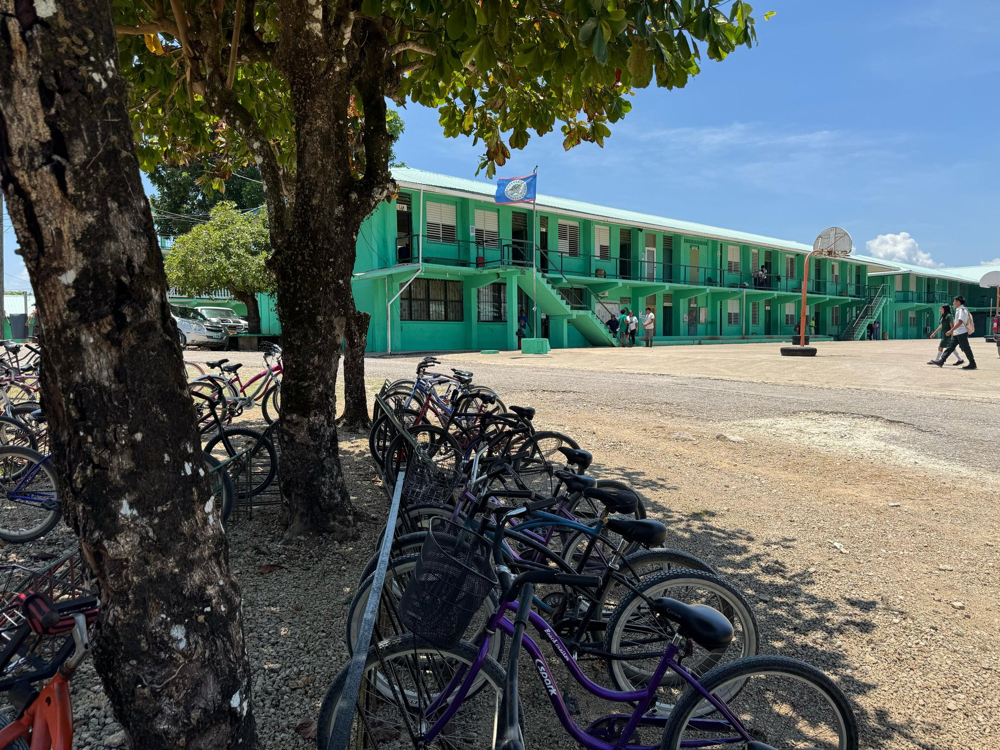

MARIO MORALES · PHD DEFENSE · UARIZONA MEZCOPH · 2026
Elapsed0:00
— / ——
Waiting for main window…
0:00
Open the main deck and press an arrow key to begin. The speaker notes for the current slide will appear here.
A question, before a roadmap
In the US, dating violence and substance use rarely occur alone.
And yet, the prevention literature for these two problems has grown in largely separate worlds. What might that separation be costing — and what does the evidence offer if we think about them together?
Next: the thesis, in one sentence.
0:00 — 0:45 · ~80 wordsIn the U.S., about ten percent of high schoolers in a dating relationship were physically hurt by a partner last year. About twelve percent have misused a prescription opioid at some point. Same kids. Same surveys.And yet, the prevention literature for these two problems has grown in largely separate worlds. I'd like to invite us to consider what that separation might be costing. And what the evidence offers if we think about it together."The thesis, in one sentence."
Any"Why start with YRBS estimates instead of the dissertation's own data?"
The hook has to be audience-agnostic before it gets technical. The YRBS figures are the
canonical national numbers for adolescent dating violence and opioid misuse in the U.S.,
and they're the same data source I use in Paper 3 (N = 20,103). Grounding the opening in
nationally representative surveillance sets the population scale before the talk moves
to the institutional scale (Paper 2) and the worldwide trial evidence (Paper 1).
Round 2: add 2 additional hook-stage Q items per §6.2 budget (2-3 for hook).
DV prevalence (10.4% physical, 5.9% sexual, currently dating)
Dissertation Ch. 1, Pop-level Burden section, p. 13; cites Brener et al. 2024, MMWR Suppl 73(4):1.
Ch. 4, Results para. 1, p. ~107; Table 13, p. 107; see CONTENT_SOURCES.md → Paper 3.
Co-occurrence claim (parallel literatures)
Ch. 1, "The Problem of Siloed Prevention," pp. 14-15; Tinner et al. 2022; Jackson et al. 2012 (both cited in extracted line 202-203).
On this slide:
Brener ND, Mpofu JJ, Krause KH, et al. Overview and methods for the Youth Risk
Behavior Surveillance System — United States, 2023. MMWR Suppl. 2024;73(4):1-12.
Vagi KJ, Olsen EO, Basile KC, Vivolo-Kantor AM. Teen dating violence among US high
school students: Findings from the 2013 National YRBS. JAMA Pediatr. 2015;169(5):
474-482.
Swedo EA, Pampati S, Anderson KN, et al. Adverse childhood experiences and health
conditions and risk behaviors among high school students — YRBS, 2023. MMWR Suppl.
2024;73(4):39-49.
A working thesis
Prevention of dating violence and substance use benefits from being
integrated
and specific.
Integrated, because the two problems often hit the same adolescents. Specific, because what drives each one isn't the same.[1]
Two patterns drive the thesis
First. Programs designed for one problem alone miss what often comes with it.
Second. Treating every substance as the same kind of risk hides what each one is really driven by.
Next: three open questions, three studies.
0:45 — 1:30 · ~83 wordsPrevention of dating violence and substance use benefits from being both integrated and specific. Integrated, because the two problems often hit the same adolescents. Specific, because what drives each one isn't the same.Two patterns drive the thesis. First: programs designed for one problem alone miss what often comes with it. Second: treating every substance as the same kind of risk hides what each one is really driven by. The evidence asks for both — integrated and specific."Three open questions, three studies."
Carvajal"Integration-and-specificity — is this a conceptual slogan or a testable claim?"
It's testable. Integration is tested in Paper 1 by asking how many rigorous trials have
evaluated both dating violence and substance use outcomes (answer: three). Specificity is
tested in Paper 3 by asking whether predictor-substance associations differ across
substances (answer: yes, p = 0.0075). The dissertation's contribution is showing that
both gaps exist at the same time, and that addressing one without the other will
systematically misallocate prevention resources.
Ch. 1 Abstract p. 11, final sentence; restated Ch. 5 Closing Statement p. ~153.
SEM as methodological ladder
Ch. 1 Theoretical Framework p. 17; Ch. 5 Theme B p. ~145; Ch. 5 Methodological Contributions p. ~150.
Bronfenbrenner U. The Ecology of Human Development. Harvard UP; 1979.
Why these three studies
Three open questions motivated three studies.
QUESTION 1 · Worldwide · Paper 1
Do programs that address both problems together actually work?
Most trials test prevention for one problem alone[1].
The few that test both have never been mapped together.
Without that map, we can't say what "integrated" delivers.
QUESTION 2 · Kentucky · Paper 2
If a program reduces dating violence, what part does the work?
Green Dot reduced dating violence and shifted students' beliefs about alcohol and assault[2].
Whether the change in beliefs caused the drop in dating violence hasn't been tested directly.
Without that test, scaling the program is a guess.
QUESTION 3 · U.S. adolescents · Paper 3
Which experiences point to opioids specifically, not substance use in general?
Teens who misuse prescription opioids face nearly every risk we measure[3].
Which of those risks point to opioids specifically hasn't been mapped.
Without that map, prevention can't be aimed at the right ones.
Next: how the three studies fit together.
1:30 — 2:30 · ~115 wordsWhy three studies? Three open questions. First, worldwide. Most trials test one problem alone. The few that test both have never been mapped together. Without that map, we can't say what "integrated" delivers.Second, Kentucky. Green Dot reduced violence and shifted students' beliefs about alcohol and assault. But did the change in beliefs cause the drop in violence? No one has tested this directly. That's what Paper 2 does.Third, the U.S. Teens who misuse prescription opioids face nearly every risk we measure. Which of those risks point to opioids specifically hasn't been mapped. Without that map, prevention can't be aimed at the right ones."Each question motivated one study. Next: how they fit together."
Coker"Gap 2 is framed as a mechanism question, but Green Dot has several mechanisms — why single out AR-SAVB?"
AR-SAVB is the specific rape-myth-consistent attribution that bystander theory predicts
the program should shift if it is operating through norm change. Other mechanisms
(bystander action frequency, collective efficacy) were not measured in the parent-trial
survey at the cadence required for a four-year panel. I flag this explicitly in the
Paper 2 discussion as a boundary condition rather than pretending the parent data
supported a full multi-mechanism test.
Round 2: 2-3 more items.
Gap 1 (integrated prevention evidence)
Ch. 1 "What Is Known and Not Known" p. 15; Ch. 2 Introduction pp. 32-37.
Gap 2 (norm-change mechanisms of bystander programs)
Ch. 1 p. 16; Ch. 3 Introduction pp. 72-73.
Gap 3 (opioid specificity)
Ch. 1 p. 17; Ch. 4 Introduction pp. 102-103.
Tinner L, et al. Multiple risk behaviours review. BMC Public Health. 2022;22:1111.
Coker AL, et al. RCT testing bystander effectiveness. Am J Prev Med. 2017;52(5):566-578.
Jones CM, et al. Prescription opioid misuse and other substance use — YRBS 2019. MMWR Suppl. 2020;69(1):38-46.
Conceptual architecture — part 1 of 2
Three studies. Three scales of analysis.
Each scale shows what the others can't.
Paper 1 stands far back and gathers every rigorous trial in the world. Paper 2 zooms in on one place — Kentucky high schools, over four years. Paper 3 looks across the entire United States in a single year.
The Social-Ecological Model motivates examining adolescent health risk at multiple scales of analysis.[1]
I'm not testing the model as a theory. I use scale as a study-design choice.
Each scale answers a question the others can't.
Next: theoretical work in Papers 2 and 3.
2:30 — 3:15 · ~105 wordsThink of these three studies as looking at the same problem from three different distances.Paper 1 stands far back. It gathers every rigorous trial in the world. Paper 2 zooms in on one place — Kentucky high schools, over four years. Paper 3 looks across the entire United States in a single year.Each distance shows things the others can't. From far back, you see what's been tried everywhere. Up close, you see what shifts inside a school over time. From the national view, you see the patterns that hold for adolescents across the country."The theoretical work lives in Papers 2 and 3."
Carvajal"Why frame this as 'scales' rather than as the Social-Ecological Model directly?"
Because the dissertation does not test multiple SEM[1] levels of one shared phenomenon
(which is the canonical SEM application). It analyzes three different phenomena at
different scales: worldwide trial evidence, an institutional intervention mechanism, and
population-level etiological pathways. SEM motivates examining health risk at multiple
scales of analysis, and that motivation matters — but it is honest to call this
multi-scale design rather than overclaim it as multi-level SEM testing.
Round 2: 2-3 more Q items.
Multi-scale analytical design
Ch. 1 "Overview of the Three Studies and Their Methodological Logic" pp. 20-22 (extracted lines 226-230).
SEM as motivating framework only
Ch. 1 Theoretical Framework, SEM subsection, p. 17 (extracted line 213).
Bronfenbrenner U. The Ecology of Human Development: Experiments by Nature and Design. Harvard University Press; 1979.
Conceptual architecture — part 2 of 2
Three papers. Three theoretical lenses.
Integrating without targeting wastes resources on what is shared. Targeting without integrating misses what crosses over.
Next: Paper 1.
3:15 — 4:30 · ~185 wordsEach paper brings a different approach. Paper 1 uses a syndemics lens. The thesis: when two health risks happen together, they often share root causes and make each other worse. If that's true for dating violence and substance use, integrated school programs should reduce both. Paper 1 asks how many trials have actually built that test.Paper 2 uses bystander theory. The thesis: in a group, no one acts because each person assumes someone else will. The fix: train every student to step in. Prediction: school-level beliefs about alcohol and sexual assault shift slowly over time. Paper 2 tests this in 26 Kentucky high schools across four years.Paper 3 puts three theories about why adolescents use substances head-to-head. First: adolescents who take risks use every substance — so all substances should rise together. Second: adolescents turn to opioids specifically to escape emotional pain like bullying — so there should be an opioid-specific bullying signal. Third: general adversity drives substance use broadly — so the bullying signal should fade once adversity is accounted for. Paper 3 puts the three predictions to one test."Paper 1."
Round 2: 2-3 more Q items.
Bystander Intervention Theory
Ch. 1 Theoretical Framework p. 18 (extracted line 215); Ch. 3 Introduction p. 72 (extracted line 464).
F1 / F2 / F3 framework assignment (Paper 3)
Ch. 4 Introduction pp. 102-103 (extracted line 643); Supplementary Methods pp. 130-132 (extracted lines 787-790).
Integration-and-specificity statement
Ch. 5 Closing Statement p. ~153 (extracted line 904).
Latané B, Darley JM. The Unresponsive Bystander: Why Doesn't He Help? Appleton-Century-Crofts; 1970.
Banyard VL, Moynihan MM, Plante EG. Sexual violence prevention through bystander education. J Community Psychol. 2007;35(4):463-481.
Coker AL, Bush HM, Cook-Craig PG, et al. RCT testing bystander effectiveness to reduce violence. Am J Prev Med. 2017;52(5):566-578.
Jessor R. Risk behavior in adolescence. J Adolesc Health. 1991;12(8):597-605.
Vanyukov MM, Tarter RE, Kirillova GP, et al. Common liability to addiction. Drug Alcohol Depend. 2003;70(3 suppl):S13-S25.
Khantzian EJ. The self-medication hypothesis. Harv Rev Psychiatry. 1997;4(5):231-244.
Eisenberger NI, Lieberman MD, Williams KD. Does rejection hurt? An fMRI study of social exclusion. Science. 2003;302(5643):290-292.
Felitti VJ, Anda RF, Nordenberg D, et al. ACE Study. Am J Prev Med. 1998;14(4):245-258.
Swedo EA, Pampati S, Anderson KN, et al. Adverse childhood experiences and health conditions among high school students - YRBS 2023. MMWR Suppl. 2024;73(4):39-49.
Singer M, Bulled N, Ostrach B, Mendenhall E. Syndemics and the biosocial conception of health. Lancet. 2017;389(10072):941-950.
Additional supporting refs available on demand: Cook-Craig et al. 2014 (Green Dot operationalization in high schools); Hsu et al. 2013 (mu-opioid system PET response to social rejection); Machin & Dunbar 2011 (brain-opioid theory of social attachment).
Act 1 · Paper 1 of 3
How many rigorous school trials have measured both dating violence and substance use?
The field has four main school-based approaches to dating-violence prevention — risk reduction for girls, self-defense, programs for boys and men, and bystander training. And four for substance use — knowledge-focused, social competence, social norms, and integrated curricula.
Paper 1 asks which of these, when tested as a rigorous trial, actually moved both.
Next: how we searched.
4:30 — 5:00 · ~61 wordsFor context: there are four major school-based approaches to dating-violence prevention — risk reduction for girls, self-defense, educational programs for men, and bystander programs. And four for substance use — knowledge-focused, social competence, social norms, and integrated curricula.Paper 1 asks which of these, when run as a randomized trial, has shown an effect on both."Here is how we searched."
Hook-style slide: Round 2 will add 2 Q items (e.g., Carvajal on why pose the question as "how many" vs. "what works").
Research question (verbatim)
Ch. 2 Introduction para. 12, p. 37 (extracted line 312); Ch. 2 Methods p. 38 (line 313).
See PRISMA / GRADE / RoB 2 references on slides 7-11.
Paper 1 · Methods microslide · PROSPERO CRD42023457770
PRISMA 2020[1]. Six databases. Dual-independent review.
Paper 1 is a systematic review. We searched six research databases for rigorous school-based trials that measured both dating violence and substance use. Here's what came out of that search.
Records identified (PubMed, EMBASE, PsycINFO, CINAHL, CABI, ERIC; 01/2012–04/2025)7,745
Title/abstract dual-coded in ABSTRACKR[4](8 reviewers)5,413
Full-text reviewed in detail→
Included: 3 cluster-RCTsN = 78,545
Quality assessment
Cochrane RoB 2[2] for trial-level risk of bias and GRADE[3]
for body-of-evidence quality. Two reviewers per study; discrepancies adjudicated by a
third. All three trials: low RoB, high-quality GRADE.
Why narrative synthesis, not meta-analysis?
Heterogeneity across populations, interventions, and outcomes precluded pooling.
PRISMA's narrative-synthesis guidance is appropriate when included studies are too
few and too methodologically distinct to combine.
Next: the answer.
5:00 — 5:55 · ~85 wordsHere's how the search ran. Six databases. Thiradolescent years of published prevention studies. The first pull turned up nearly eight thousand papers.Two reviewers, working independently, read every abstract. A tool flagged the most promising matches first. About five thousand candidates made it through.Then a rigor check. Each trial was scored against the gold-standard checklist for trial quality. Only the strongest passed.We didn't average the trials together. Too few. Too different. So we tell their story side by side."Now — the answer."
Round 2: 2-3 more (Coker on study-quality threshold).
Search strategy, databases, dates
Ch. 2 Methods — Search, p. 39 (extracted line 316).
7,745 pre-dedup → 5,413 screened
Ch. 2 Methods p. 39 and Discussion para. 1, p. 52 (extracted lines 316, 348).
3 included / N = 78,545
Ch. 2 Abstract p. 30 and Results p. 44 (extracted lines 295, 326-327).
Tools (Zotero, ABSTRACKR, ExaCT)
Ch. 2 Methods — Data Collection, pp. 40-43 (extracted lines 318-320).
PROSPERO CRD42023457770
Ch. 2 Declarations p. 29 and Methods p. 38 (extracted lines 288, 314).
Page MJ, et al. PRISMA 2020 statement. BMJ. 2021;372:n71.
Higgins JP, et al. Cochrane Handbook + RoB 2 Tool. 2019.
Guyatt GH, et al. GRADE guidelines. J Clin Epidemiol. 2011.
Wallace BC, et al. ABSTRACKR. IHI. 2012.
Kiritchenko S, et al. ExaCT. BMC Med Inform Decis Mak. 2010.
Paper 1 · the answer
3 cluster‑RCTs
N = 78,545 students · thiradolescent years of search
Across six databases and thiradolescent years of rigorous prevention science, only
three cluster-randomized trials worldwide have
evaluated both DV and SU outcomes in adolescents in school settings.
Green Dot (US)
Coker et al.[1]
Bystander intervention · 26 Kentucky high schools. Trained students on dating-violence prevention. Did not explicitly train on substance use.
Fourth R (US + Canada)
Wolfe et al.[2] + Temple et al.[3]
Peer-resistance curriculum. Trained students on dating-violence prevention AND substance-use content.
Next: the surprise.
5:55 — 6:40 · ~95 wordsThree. That's the answer. After thiradolescent years and nearly eight thousand papers, only three rigorous trials have ever measured both.Together they enrolled almost eighty thousand students. All in North America. Two programs.Green Dot. A bystander program in 26 Kentucky high schools. It trains students to step in when a friend is at risk. It focuses on dating violence — not substance use.Fourth R. A classroom curriculum used in the U.S. and Canada. It teaches students to handle pressure — and explicitly covers both dating violence and substance use."Here is the surprise."
Any"Only three — isn't that a finding against the dissertation's own claim that integration matters?"
The opposite. The finding that only three exist is the evidence for the structural gap;
it is what the dissertation argues is an emergency, not what the dissertation is trying
to explain away. The strength of the claim — that prevention science has treated DV and
SU as separate problems — is in the smallness of the number, not despite it.
Round 2: 2-3 more Q items.
Three cluster-RCTs / N = 78,545
Ch. 2 Abstract p. 30 (extracted line 295); Results p. 44 (line 326-327).
Program characteristics (Green Dot vs. Fourth R)
Ch. 2 Results pp. 44-52; Table 1 (extracted table #1).
Coker AL, Bush HM, Cook-Craig PG, et al. RCT testing bystander effectiveness to reduce violence. Am J Prev Med. 2017;52(5):566-578.
Wolfe DA, Crooks C, Jaffe P, et al. A school-based program to prevent adolescent dating violence: A cluster randomized trial. Arch Pediatr Adolesc Med. 2009;163(8):692-699.
Temple JR, Baumler E, Wood L, et al. A dating violence prevention program for middle-school youth: A cluster randomized trial. Pediatrics. 2021;148(5):e2021052880.
Paper 1 · the surprise
The program that didn't teach about substances reduced substance-related violence. The program that did teach about substances didn't.
Green Dot[1]
Didn't teach about substances. Still cut substance-related sexual violence by Year 4.
~23% lower across all students.
~28% lower among girls.
Fourth R[2,3]
Did teach about substances. Cut dating violence — but substance use didn't move.
U.S. trial: dating violence dropped about 34%. Substance misuse didn't change.
Canada trial: substance use unchanged at 2-year follow-up.
What this points to
If a program changes substance-related behavior without ever teaching about substances, the mechanism may not be the lessons themselves. It may be that the program shifted what students treat as normal. That's what Paper 2 tests.
Method:
Green Dot Y4 substance-related sex perpetration PRR = 0.77 [99% CI 0.65, 0.95]; girls PRR = 0.72 [0.55, 0.95] · Fourth R US dating-violence perpetration aOR = 0.66 [0.43, 1.00], p = .05; substance misuse aOR = 0.88 [0.60, 1.28] (null) · Fourth R Canada problematic substance use null at 2y follow-up · PRR = prevalence rate ratio (school level); aOR = adjusted odds ratio (individual level)
Next: the review's contribution and its limits.
6:40 — 7:55 · ~107 wordsHere's the surprise. Green Dot doesn't train students on substance use at all — yet it reduced substance-related sexual violence by Year 4. About 23 percent lower across students. About 28 percent lower among girls. Fourth R, which does cover substance use directly, reduced dating violence — but didn't move substance misuse.One program shifted both outcomes without teaching one of them. The other taught both, and only moved one. The piece that worked may not be the curriculum content. It may be a shift in what students treat as normal. That's the hypothesis Paper 2 tests."Before Paper 2 — the review's contribution and its limits."
Coker"Is the Year-4-only perpetration finding in Green Dot a replication signal or a post-hoc observation?"
Coker et al. 2017 pre-specified the year-by-year analysis, so the Year-4 effect is not
post-hoc. The Year-3 victimization effect that did not persist to Year 4 is
transparently reported in the original paper. In Paper 2 I pick up the same trial's data
and test a distinct outcome (AR-SAVB) — the delayed pattern you see in this review is the
same delayed pattern I document at the norm level. The dissertation's position is that
both patterns reflect a common mechanism: cumulative norm change.
Round 2: 2-3 more.
Green Dot cross-domain PRRs
Ch. 2 Results p. 44 (extracted line 334); Coker et al. 2017 as underlying trial.
Fourth R US DV and SU effects
Ch. 2 Results p. 44 (extracted line 335); Temple et al. 2021.
Integration-gap implication
Ch. 2 Discussion p. 52 (extracted lines 348-352); Ch. 5 Theme A (extracted line 870).
Coker AL, et al. 2017 (parent trial of Green Dot).
Wolfe DA, et al. 2009 (Fourth R Canada).
Temple JR, et al. 2021 (Fourth R US).
Paper 1 · quality + contribution
A structural evidence gap — not a mechanism gap.
Quality of the included evidence
All three trials passed the strict quality screen — low risk of bias and high-quality evidence. So this isn't a thin evidence base of bad trials. It's a thin evidence base of good trials.
Honest limits: the search was English-only, three trials are too few to combine into a single average, and all three were run in North America (Kentucky, Ontario, Texas).
What Paper 1 contributes
It establishes a structural gap in the field. After thirteen years of rigorous search, only three trials have measured both dating violence and substance use together.[1,2]
And it leaves the next question on the table: if a program changes substance-related behavior without ever teaching about substances, what's actually doing the work? Which norm? That's where Paper 2 picks up.
Coker et al. 2017 · Green Dot
Low RoBHigh GRADE
Wolfe et al. 2009 · Fourth R (CA)
Low RoBHigh GRADE
Temple et al. 2021 · Fourth R (US)
Low RoBHigh GRADE
Paper 1 is submitted to Discover Public Health. Coauthors: M. Morales, C. Freedman,
M.P. Koss, S. Carvajal, P.L. Haynes. PROSPERO CRD42023457770.
Next: a 2-minute summary in Spanish.
7:55 — 8:40 · ~137 wordsAll three trials passed the strict quality screen. So this isn't a story about a thin evidence base of bad trials. It's a thin evidence base of good trials. The honest limits — English-only search, three trials too few to combine into a single average, all three run in North America — are real, but they don't change that.What Paper 1 establishes is structural. The field hasn't built the trials that would let us test integration in the first place. Three is the number you can count on one hand.Paper 1 leaves the next question on the table. If a program reduces substance-related harms without ever teaching about substances, what's actually doing the work? Which norm? That's where Paper 2 picks up."Aqui les comparto un resumen, en espanol, de lo que acabamos de ver."
Round 2: 2-3 more.
Low RoB / high GRADE across 3 studies
Ch. 2 Results p. 51 (extracted line 337); Quality of evidence para. p. ~52 (line 346); Table 2.
Language-only and North-America-only limitations
Ch. 2 Limitations p. 54 (extracted line 355); Ch. 5 Limitations p. ~151 (line 895).
Submission venue · authors
Ch. 2 header note p. 28 (extracted lines 272-275).
McNaughton Reyes HL, et al. Global systematic review of DV prevention. Lancet Child Adolesc Health. 2021;5(3):223-232.
Faggiano F, et al. Universal school-based SU prevention. Cochrane DB Syst Rev. 2014;CD003020.
Resumen en espanol
8:40 — 10:55 · ~15 words"Aqui les comparto un resumen, en espanol, de lo que acabamos de ver.""Paper 2."
Spanish summary slide — no Q items.
Video summary — no source citation needed.
Video summary in Spanish.
Act 2 · Paper 2 of 3
If Green Dot reduces "alcohol/drug-facilitated sex" without SU training, which norm carries the violence reduction?
Secondary analysis of a cluster-RCT. 26 Kentucky high schools. Four years. 16,509 students at
baseline. Coker 2017 already showed Green Dot shifted alcohol-blaming attitudes; Paper 2 tests
whether that attitude shift mediates the violence reduction.
Next: why that specific construct.
10:55 — 11:25 · ~51 wordsGreen Dot reduced violence. Earlier research showed it also shifted students' beliefs about alcohol and assault.The piece we don't yet know: is the belief shift what carries the drop in violence? That's what Paper 2 tests — in 26 Kentucky high schools, across four years."And why that specific belief."
Chapter card: no Q items for Round 1.
Paper 2 trial registration
ClinicalTrials.gov NCT01878097 · Ch. 3 Abstract p. 71 (extracted line 458).
See methods / results references on slides 13-17.
Paper 2 · the question we track
The belief a bystander program is supposed to change.
Imagine you're a student filling out a school survey. One of the statements you're asked to agree or disagree with is this:
“If a girl is sexually assaulted while she is drunk, she is to blame for letting
things get out of control.”
That kind of belief — blaming a victim of sexual assault because alcohol was involved — is exactly what bystander programs are designed to change.[3]
Why this question matters
Bystander training works by shifting what students treat as normal — moving the school from passive tolerance to active opposition.[1,2]
Paper 2 watches whether fewer students agree with this statement, year after year, across the whole school. If norm change is real, this is where it should show up first.
Two honest limits: we're tracking just one question, not a whole questionnaire. And it only mentions a female victim. Both make any change harder to spot — so if we still find one, that's a stronger signal, not a weaker one.
Next: the trial.
11:25 — 12:10 · ~128 wordsImagine you're a student filling out a school survey. One of the statements you're asked to agree or disagree with is this: "If a girl is sexually assaulted while she is drunk, she is to blame for letting things get out of control."That kind of belief — blaming a victim of sexual assault because alcohol was involved — is exactly what bystander programs try to change. Paper 2 watches whether fewer students agree with it, year after year, across the whole school.Two honest limits. We're tracking just one question, not a whole questionnaire. And it only mentions a female victim. Both make any change harder to spot — so if we still find one, that's a stronger signal, not a weaker one."Here is the trial."
Any"Why dichotomize? Why not treat the 4-point scale as ordinal?"
Dichotomization matches the school-level binomial outcome structure (prevalence of
endorsement per school per year), which is what the primary analysis requires. I ran an
ordinal check as part of the diagnostic work; the direction and magnitude of the Y4
effect are unchanged. The dichotomization is reported transparently in Ch. 3 Measures.
Round 2: 3-4 more.
AR-SAVB item wording + coding
Ch. 3 Methods — Measures, p. 74 (extracted line 470).
Single-item / female-victim limits
Ch. 3 Limitations p. 84 (extracted line 523); repeated in Ch. 5 Limitations (line 895).
Latané B, Darley JM. The Unresponsive Bystander: Why Doesn't He Help? Appleton-Century-Crofts; 1970.
Banyard VL, Moynihan MM, Plante EG. Sexual violence prevention through bystander education. J Community Psychol. 2007;35(4):463-481.
Suarez E, Gadalla TM. Stop blaming the victim: A meta-analysis on rape myths. J Interpers Violence. 2010;25(11):2010-2035.
Paper 2 · design
The trial: 26 Kentucky high schools, four years, randomized.
How it ran.
It started with 46 Kentucky high schools. After excluding the smallest, 26 ended up in the analysis — 13 randomly assigned to receive Green Dot, 13 kept as comparison.
Students filled out an anonymous survey at the start, and once every year for four more years. Across all five waves, the analysis covers about 16,500 students.
Green Dot ran in two layers. School-wide talks reached every student. Starting the second year, about one in eight students went through a five-hour training to become the active bystanders inside their school.[1]
IRB-approved at the University of Kentucky.[2] Schools differed only slightly from each other on the outcome (ICC = 0.009) — exactly what a school-level norm measure should look like.
Next: three hypotheses, then the model choice.
12:10 — 13:40 · ~98 wordsHere's the trial. It started with 46 Kentucky high schools. After excluding the smallest, 26 ended up in the analysis — 13 randomly assigned to receive Green Dot, 13 kept as comparison.Students filled out anonymous surveys at the start and once every year for four more years. Across all five waves, the analysis covers about 16,500 students.Green Dot ran in two layers. School-wide talks reached every student. And starting the second year, about one in eight students went through a five-hour training to become the active bystanders inside their school."Three hypotheses. Then the model choice."
Round 2: 3-4 more (ICC defense, power for cross-subgroup tests, attrition patterns).
26 schools, 13-13 allocation, 2010-2014
Ch. 3 Methods Setting/Design, p. 73 (extracted line 468).
Ch. 3 Methods Participants/Procedures p. 74 (extracted line 469); Table 3 (extracted table #7) and footnotes.
IRB #13-0680-F1V; parent trial consent procedures
Ch. 3 Methods Participants p. 74 (extracted line 469).
Cook-Craig PG, et al. Green Dot in high schools. Violence Against Women. 2014;20(10):1179-1202.
Coker AL, et al. RCT testing bystander effectiveness. Am J Prev Med. 2017;52(5):566-578.
Paper 2 · what we test
Three things we test. From the headline, down to the people inside the program.
First test · the headline
Do Green Dot schools, as a whole, drop in victim-blaming attitudes more than comparison schools?
If norm change is real at the school level, this is where it should show up first.
Second test · behavior, and what carries it
Do the actual sexual-violence behaviors drop too — and is the belief shift what carries that behavior change?
A mediation question. We flag low statistical power up front, by design, since we inherited the trial.
Third test · inside the program
Inside Green Dot schools, do students who actually went through the training look different from those who didn't?
This one is correlation, not cause — students weren't randomly picked for the training. We flag that up front.[1]
Method:
First test — school-level binomial GLMM with random intercept for school, prespecified joint Treatment×Year test · Second test — school-level GLMMs for SUV/SUP + product-of-coefficients ecological mediation (25 clusters, ~20% power) · Third test — GEE Poisson, CR2 robust SE, IPTW · AR-SAVB = alcohol-related sexual-assault victim-blaming; SUV/SUP = substance-use-related sexual-violence victimization/perpetration
Next: the two primary models.
13:40 — 14:25 · ~94 wordsWe test three hypotheses. First: do Green Dot schools as a whole drop in victim-blaming attitudes more than comparison schools? That's the headline.Second: do the actual sexual-violence behaviors drop too? And is the belief shift what carries that behavior change? This mediation test has low statistical power — by design, since we inherited the trial.Third: inside Green Dot schools, do students who actually went through the training look different from the ones who didn't? This one is correlation, not cause — students weren't randomly picked for the training."And the model choices."
Round 2: 3-4 more.
H1 / H2 / H3 wording
Ch. 3 Introduction p. 73 final para. (extracted line 466); Ch. 1 Aim 2 specification p. 19 (extracted line 223).
H3 observational framing
Ch. 3 Methods Training Receipt p. 76 (extracted line 476).
Pustejovsky JE, Tipton E. Small-sample CR2 cluster-robust methods. J Bus Econ Stat. 2018;36(4):672-683.
Paper 2 · methods microslide
Two models, two levels, two justifications.
School-level · Primary
Did Green Dot schools, as a whole, change their views more than comparison schools?
We measured the share of students agreeing with the victim-blaming statement, in each school, every year. The model accounts for natural differences between schools so they don't swallow the program's effect.
Method:
Binomial GLMM · logit link · random intercept for school · fixed effects: treatment, year, Treatment×Year · prespecified joint Treatment×Year test · Bonferroni α = .0125
Individual-level · Secondary + H3
Does the same pattern hold student by student?
We look at each student individually. The math accounts for the fact that students from the same school resemble each other more than random students — important when we only have 26 schools.
Method:
GEE Poisson[1] · log link · exchangeable correlation, clustered by school · CR2 cluster-robust SE with Satterthwaite df[2] · standard in modern cluster-RCT analysis[3]
One rule across both
Every student in a Green Dot school counts as a Green Dot student — even if that student never went through the training.
Anything else would let school-level decisions about who got training quietly warp the answer.
Method:
Intent-to-treat is the only defensible primary analysis for a cluster-RCT[3] · per-protocol and as-treated analyses reported as sensitivity checks · H3 (trained vs. untrained) flagged as observational
Next: the result.
14:25 — 15:55 · ~128 wordsTwo ways of looking at the same data. The first asks about whole schools. Did Green Dot schools, as a whole, change their views more than comparison schools? The model is built so that natural differences between schools don't swallow the program's effect.The second zooms in on students. Does the same pattern hold one student at a time? The math accounts for the fact that students in the same school are more alike than random students — important when we only have 26 schools.One rule for both. Every student in a Green Dot school counts as a Green Dot student — even those who never took the training. Counting only the trained ones would make the comparison unfair, since schools choose who gets trained."The result."
Round 2: 2-3 more.
GLMM specification + Bonferroni α = .0125
Ch. 3 Methods Statistical Analysis p. 75 (extracted line 472).
Zou G. A modified Poisson regression approach to prospective studies with binary data. Am J Epidemiol. 2004;159(7):702-706.
Pustejovsky JE, Tipton E. Small-sample methods for cluster-robust variance estimation and hypothesis testing in fixed effects models. J Bus Econ Stat. 2018;36(4):672-683.
Turner EL, Li F, Gallis JA, Prague M, Murray DM. Review of recent methodological developments in group-randomized trials: Part 2 — Analysis. Am J Public Health. 2017;107(7):1078-1086.
Paper 2 · primary result
Year 4. Not before. The arms split.
Year 4: students in Green Dot schools were 15% less likely to hold the victim-blaming belief.
Both arms started at 30%. Years 1, 2, 3 — no detectable gap. The story isn't the size — it's the shape. Not three flat years and a magic Year 4. It's a slow norm change finally surfacing in the survey.
Method:
Joint Treatment×Year test χ²(4) = 12.91, p = .012 · Year-by-year ORs: Y1 1.02, Y2 0.96, Y3 0.93, Y4 0.85 [0.76, 0.95], p = .003 · Bonferroni α = .0125 for 4 tests[1] · Binomial GLMM · 125 school-years · 74,693 student responses · method details on slide 15
Next: sensitivity checks — because one trajectory isn't enough.
15:55 — 17:55 · ~96 wordsBoth arms started at 30%. Years 1, 2, 3 — they tracked together. No detectable gap.Year 4 — the lines split. Green Dot schools ended around 19%; comparison schools around 22%. A 3-percentage-point gap, which works out to 15% lower odds of holding the belief — and survives the strict correction we applied for testing across multiple years.The story isn't the size — it's the shape. This isn't three flat years and a magic Year 4. It's a slow norm change finally surfacing in the survey."Sensitivity checks — because one trajectory isn't enough."
Coker"Why do you believe the Year 4 effect is real and not noise with only four post-baseline time points?"
Three reasons. First, the prespecified joint Treatment-by-Year test is significant
at χ²(4) = 12.91, p = .012 — that is the omnibus test, not a fishing expedition
within-year. Second, the Year 4 interaction OR = 0.85, p = .003, survives Bonferroni
correction at α = .0125 for four tests. Third, within treatment schools, Green-Dot-
trained students show 17% lower AR-SAVB than untrained students (IPTW PR = 0.83, p = .020)
— an internal dose-response signal consistent with the cluster-level effect. Multiple
converging lines of evidence at different levels of analysis.
Coker"You are calling this a 'delayed effect.' Why not 'implementation saturation'? The Spring-2011 popular-opinion-leader phase is when dose ramped up."
Agreed — the "delayed effect" language is timing-based (when the interaction became
significant), but the mechanism is best described as implementation saturation:
once enough students had been trained and the trained students had been in the schools
long enough to propagate the norm through peer networks, the threshold was crossed. I
prefer "delayed effect" for external readers and "cumulative norm change" for theoretical
readers; both frame the same underlying pattern.
Round 2: 2-3 more.
Baseline balance: 30.30% vs 30.07%, SMD 0.04
Ch. 3 Results para. 1 p. 78 (extracted line 498); Table 12 (extracted table #16).
Joint test χ²(4) = 12.91, p = .012
Ch. 3 Results p. 79 (extracted line 499); Table 3 (extracted table #7).
T×Y4 OR = 0.85 [0.76, 0.95], p = .003
Ch. 3 Results p. 79 (extracted line 499); Table 3 footer.
Bonferroni α = .0125
Ch. 3 Methods Statistical Analysis p. 75 (extracted line 472).
Year-by-year ORs (Y1 1.02; Y2 0.96; Y3 0.93)
Table 3 rows (extracted table #7).
Year-by-year prevalence pattern (~19% / ~22% at Y4)
Ch. 3 Results para. 3 p. 79 (extracted line 504); Figure 2 on p. 94.
Welch Y4 t-test: 3.0 pp, p = .085
Ch. 3 Results p. 79 (extracted line 504); Table 6 (extracted table #10).
Bender R, Lange S. Adjusting for multiple testing. J Clin Epidemiol. 2001;54(4):343-349.
Paper 2 · sensitivity checks
The Year-4 finding holds across five pre-specified robustness checks.
Main analysis
15% lower
odds at Year 4
Without the standout school
14% lower
same direction
Treat year as a smooth trend
4% lower
per year · steady decline
Compare school averages
3 pp lower
same direction
Look student by student
10% lower
same direction
Five different ways of testing the same finding. All five point the same direction. Drop the standout school, treat year as a smooth trend, compare schools as units, look student by student — the answer holds.
Method:
Main analysis (Binomial GLMM, unadjusted): OR = 0.85 [0.76, 0.95], p = .003 · Outlier school excluded: OR = 0.86 [0.77, 0.96], p = .008 · Continuous year (linear trend): OR = 0.96/year [0.94, 0.98], p = .001 · Cluster-summary Welch t-test[1] (26 clusters): −3.0 pp, p = .085 · Individual-level GEE Poisson: PR = 0.90 at Y3, p = .106
Next: the secondary outcomes — different story.
17:55 — 19:10 · ~91 wordsWe tested the Year-4 finding five different ways, each one chosen ahead of time.Drop the school with the strongest Year-4 effect — same answer. Treat year as a smooth trend instead of four separate years — same answer, with an even tighter p-value. Compare schools as units with a simpler test — same direction, less precision (because 26 schools is small for that test). Run the analysis at the student level instead of the school level — same direction.Five different lenses. Same answer."And the secondary outcomes? Different story."
Round 2: 2-3 more.
Five sensitivity checks for T×Y4
Ch. 3 Supplements Table 6 (extracted table #10); Results para 3 p. 79 (line 504).
Ruxton GD. The unequal-variance t-test. Behav Ecol. 2006;17(4):688-690.
Paper 2 · secondary outcomes
The behaviors themselves didn't move at the school level — and that tells us something too.
Outcome
Year 1
Year 2
Year 3
Year 4
Being a victim of substance-related sexual violence
no change
no change
hint*
no change
Committing it
no change
no change
no change
no change
*Year-3 hint of reduction in victimization didn't last to Year 4 and didn't survive the multi-test correction. We report it transparently; we don't claim it.
Attitudes shift before behaviors do. Green Dot moved the specific belief bystander theory said it should move. But four years isn't long enough to see consistent change in rare behaviors at the school level. That's a boundary, not a failure.[1]
Method:
SUV (substance-use-related sexual victimization) main effect: OR = 0.99 [0.86, 1.14], p = .881 · SUP (substance-use-related sexual perpetration) main effect: OR = 0.95 [0.81, 1.12], p = .562 · Joint Treatment×Year tests significant: SUV χ²(4) = 15.19, p = .004; SUP χ²(4) = 15.80, p = .003 · Year-3 SUV: OR = 0.81 [0.68, 0.95], p = .012; Year-4 SUV: OR = 0.95 [0.80, 1.12], p = .537 · none survive Bonferroni α = .0125
Next: mediation and training-receipt.
19:10 — 20:25 · ~93 wordsWe also tracked the actual sexual-violence behaviors — both being a victim and committing the act.At the four-year mark, neither showed a clear school-level reduction. Year 3 hinted at a drop in victimization, but it didn't last to Year 4 or survive the multi-test correction.How to read this? Attitudes shift before behaviors do. Green Dot moved the specific belief bystander theory said it should move. But four years isn't long enough to see consistent change in rare behaviors at the school level. That's a boundary, not a failure."Mediation and training-receipt."
Coker"A null SUV and SUP is uncomfortable — the parent trial reported cross-domain SV reductions. How do you reconcile?"
The parent-trial cross-domain reductions (Coker 2017) are on the alcohol-/drug-
facilitated sexual violence outcome measured with a different item set — specifically
"sexual activities when you were drunk or using drugs." My SUV and SUP outcomes are the
school-year proportion of students endorsing those same items, modeled at the school
level rather than pooled across years. The within-outcome timing pattern also differs:
parent-trial Y4 perpetration was significant across the pooled sample; my school-level
year-specific SUV Y3 finding (0.81) did not persist to Y4. Both analyses use the same
data; they answer slightly different questions. The Paper 2 framing is honest about
detecting institutional-norm change on AR-SAVB but not institutional-behavior change on
SUV/SUP in the school-level framework.
Round 2: 3-4 more.
SUV/SUP main effects, joint tests, year-specific
Ch. 3 Results para. 4 p. 81 (extracted line 505); Table 4 (extracted table #8).
Boundary-condition interpretation
Ch. 3 Discussion para. 3 p. 83 (extracted line 519); Ch. 5 Theme C (extracted line 873).
DeGue S, et al. Systematic review of SV-prevention primary prevention. Aggress Violent Behav. 2014;19(4):346-362.
Paper 2 · two exploratory checks
Two more checks. One question we couldn't answer. One signal that points the same way as the main result.
Question we couldn't answer
Did the belief change actually carry the behavior change?
We can't tell. The trial wasn't built for this — only 25 schools means the test has too little power. We don't claim a mediation effect. We don't dismiss one either.
Signal that points the same way
Among Green Dot students who actually went through the training: about 17 to 22 percent less likely to hold the victim-blaming belief than untrained students.
Three different statistical adjustments — the gap stays the same. Caveat: this is a correlation, not proof. Students weren't randomly picked for training.
Three lines of evidence point the same way. None alone is conclusive; together they're consistent.
Method:
Ecological mediation (school-level product-of-coefficients): 25 clusters · ~20% power by design · treatment→mediator path non-significant · indirect effects imprecise. Training receipt within treatment schools: N = 6,912 in Year 4 (3,384 trained / 3,528 untrained) · Unadjusted PR = 0.78, p = .004 · Covariate-adjusted PR = 0.83, p = .026 · IPTW PR = 0.83, p = .020[1] · framed as observational
Next: Paper 2 contribution and its honest limits.
20:25 — 21:40 · ~123 wordsTwo more pieces.First, mediation. Did the belief change actually carry the behavior change? Honest answer: we can't tell. The trial wasn't built to test this — only 25 schools means the test has too little power. We don't claim a mediation effect. We don't dismiss one either.Second, the students who actually went through the training. About 6,900 students in Year 4 — roughly half had taken the training. Across three different statistical adjustments, trained students were 17 to 22% less likely than untrained students to hold the victim-blaming belief. This is a correlation, not proof — students weren't randomly picked for training. But it points the same direction as the school-level result."What Paper 2 contributes — and its honest limits."
Round 2: 3-4 more.
Ecological mediation inconclusive; 25 clusters, ~20% power
Ch. 3 Methods Exploratory p. 76 (extracted line 475); Table 8 (extracted table #12); Results para. 4 (line 505 end).
Ch. 3 Results p. 82 (extracted line 511); Table 9 (extracted table #13).
Year-4 treatment-school N = 6,912 (3,384/3,528)
Table 9 notes (extracted line 597).
Hernán MA, Robins JM. Causal Inference: What If. Chapman & Hall/CRC; 2020.
Paper 2 · contribution + limits
The lesson: school norms shift slowly — and slow doesn't mean ineffective.
What Paper 2 contributes
The piece that actually worked is the school-wide change in beliefs — not the skills any one student picked up.[1]
Programs like this need years to show their effect. A three-year trial would have missed Year 4 entirely. That's a design lesson, not a footnote.
And we tracked all of this with a single survey question. That made any real effect harder to spot. The fact that we still found one is what makes it solid.
Honest limits
We tracked just one survey question, and it only mentioned a female victim. Both make any real effect harder to spot.
The data are anonymous surveys in one state, so we can't follow individual students over time or generalize beyond Kentucky.
And we can't formally prove the belief change is what carries the behavior change. The trial wasn't built for that test.
Paper 2 submitted to American Journal of Preventive Medicine.
Next: a 2-minute summary in Spanish.
21:40 — 22:25 · ~120 wordsPaper 2 leaves three things behind. First — the piece that actually worked is the change in school-wide beliefs, not the skills any one student picked up.Second — programs like this need years to show their effect. A three-year trial would have missed Year 4 entirely. That's a design lesson, not just a footnote.And third — we tracked all of this with a single survey question. That made any real effect harder to spot. The fact that we still found one is what makes it solid. The honest limits — one question, one state, anonymous data, no formal mediation — are real. None of them changes the headline."Aqui les comparto un resumen, en espanol, del segundo estudio."
Carvajal"How generalizable is this Kentucky result to other U.S. states and to health-promotion practice outside the Southeast?"
Limited on one axis, substantial on another. State-level generalizability is limited
— Kentucky rural/urban mix, rape-crisis-center delivery infrastructure, and demographic
composition are all specific. Programmatic generalizability is stronger: the
mechanism finding (cumulative norm change, delayed emergence, four-year minimum
evaluation window) should replicate wherever the program is delivered with fidelity over
enough years. The THRIVE-Belize feasibility study tests exactly this in a non-US context
— directly addressing this limit.
Round 2: 3-4 more.
Paper 2 contributions (cumulative norm change, boundary conditions)
Ch. 3 Discussion pp. 82-84 (extracted lines 517-525); Ch. 5 Theme C pp. 146-147 (line 873).
Limits
Ch. 3 Limitations para. p. 84 (extracted line 523).
Submission venue · authors
Ch. 3 header pp. 70-71 (extracted lines 443-446).
Badour CL, et al. Long-term effect of bystander intervention on SU disorders. J Fam Violence. 2024.
Resumen en espanol
22:25 — 24:40 · ~18 words"Aqui les comparto un resumen, en espanol, del segundo estudio.""Paper 3 — population scale, completely different question."
Spanish summary slide — no Q items.
Video summary — no source citation needed.
Video summary in Spanish.
Act 3 · Paper 3 of 3
What makes some adolescents turn to opioids — specifically?
When others turn to alcohol, marijuana, or nothing at all — what's special about opioids?
Next: the puzzle behind it.
24:40 — 25:10 · ~29 wordsWhat makes some adolescents turn to opioids — specifically — when others turn to alcohol, marijuana, or nothing at all? That's Paper 3's question."And why the answer matters."
Chapter card: no Q items for Round 1.
Motivating observation (NMPOU kids → virtually all risk behaviors)
Jones et al. 2020 (MMWR Suppl 69(1):38-46); cited Ch. 4 Introduction p. 102 (extracted line 641).
See methods / results references on slides 24-30.
Paper 3 · why this question
Look at any adolescent who misuses opioids, and you'll see almost every risk we measure.
Risks at school. Risks at home. Risks in the neighborhood. Risks in their own minds.[1,2,3] You'd be tempted to say all of those cause opioid misuse.
But here's the catch: the same risks show up in adolescents who drink, smoke marijuana, or use other drugs. A list of risks can't tell us what's special about opioids.
Why we have to ask it differently
Programs that try to prevent opioid use specifically need different ingredients than programs that try to prevent substance use in general. To target the right ingredient, prevention has to know which experiences point to opioids in particular — and which just point to substances overall. That's the question Paper 3 was built to answer.
Next: three competing ideas about why adolescents turn to opioids.
25:10 — 25:55 · ~100 wordsHere's why the question is harder than it sounds. Look at any adolescent who misuses opioids and you'll see risks across the board — risks at school, risks at home, risks in the neighborhood, risks in their own minds. You'd be tempted to say "all of those cause opioid misuse."But the same risks show up in adolescents who drink, smoke marijuana, or use other drugs. So a list of risks doesn't actually tell us what's special about opioids. To target the right thing, prevention has to know which risks point to opioids in particular."Three competing ideas about why."
Round 2: 2-3 more.
Virtually-all-risk-behaviors motivation
Ch. 4 Introduction para. 2 p. 102 (extracted line 641); Jones CM et al. 2020.
Specificity vs. generality framing
Ch. 4 Introduction paras. 3-4 pp. 102-103 (extracted lines 642-644).
Jones CM, Clayton HB, Deputy NP, et al. Prescription opioid misuse and use of alcohol and other substances among high school students — Youth Risk Behavior Survey, 2019. MMWR Suppl. 2020;69(1):38-46.
Cho J, Kelley-Quon LI, Barrington-Trimis JL, et al. Behavioral health risk factors for nonmedical prescription opioid use in adolescence. Pediatrics. 2021;148(3):e2021051451.
Bhatia D, Mikulich-Gilbertson SK, Sakai JT. Prescription opioid misuse and risky adolescent behavior. Pediatrics. 2020;145(2):e20192470.
Paper 3 · F1 / F2 / F3 in plain language
Three frameworks. Three testable predictions. One dataset that lets us choose.
Idea 1 · Risk-taking
Some adolescents just try everything.
If this is the main story, opioids should rise alongside alcohol, marijuana, cigarettes — across the board.
No single experience would point to opioids more than to other substances.
Idea 2 · Distress
Some adolescents use opioids to escape emotional pain.
If this is right, bullying and suicidal thinking should point to opioids in particular, not to substances in general.
The pattern would line up with what brain science says about social pain[1,2,3].
Idea 3 · Hardship
It's not opioids in particular — it's just hard lives.
If this is right, family struggles and unsafe surroundings should push adolescents toward all kinds of substances, not just opioids.
The bullying-opioid link should fade once we look at the bigger picture.
Why this counts as a real test
Each idea predicts a different pattern in the data. Paper 3 puts the three head-to-head — and lets the data tell us which one fits best. The three ideas aren't mutually exclusive; all three could be partly true. The data is what tells us how much of each.
Next: the data.
25:55 — 27:10 · ~149 wordsThree different ideas about why some adolescents turn to opioids. Each idea expects to see a different pattern in the data.Idea one. Some adolescents just take risks — they try anything. If that's the main story, opioids should rise alongside drinking, marijuana, smoking, everything. Across the board.Idea two. Some adolescents turn to opioids specifically when they're hurting emotionally — like from being bullied. If that's the story, bullying should show up linked to opioids and nothing else.Idea three. It's not opioids in particular — it's just hard lives. Family stress, sexual victimization, unsafe neighborhoods — they all push adolescents toward many kinds of substances. If that's right, the bullying link from idea two should fade once we look at the whole picture.These three ideas aren't mutually exclusive. All three could be partly true. The data is what tells us which one fits best."The data."
Round 2: 3-4 more.
F1/F2/F3 predictions stated
Ch. 4 Introduction paras. 3-4 pp. 102-103 (extracted line 643-644); Ch. 1 Etiological Specificity p. 18 (extracted line 217).
2023 YRBS. Nationally representative. First wave with household adversity items.
Sample
20,103
U.S. high school students
Design
3-stage
cluster · 76% school response
Prevalence
11.6%
Lifetime NMPOU (weighted)
ACE attribution
84.3%
Of NMPOU is attributable to ACEs[1]
Why the math weighs students unequally
The CDC's survey isn't a simple random sample. It's built so that every group of students — small schools, big schools, every region — gets fairly represented. That means each student counts a little differently in the math, on purpose, so the totals reflect the whole U.S.[2]
Why two sample sizes
Some questions — like ones about home life and unsafe surroundings — were only asked of about 14,000 of the 20,000 students, by survey design. Models that use those questions use that smaller sample. We confirmed that smaller group looks like the bigger one, so the results aren't coming from a different kind of student.
Method:
YRBS 2023 complex sampling: weights, strata, PSU[2] · Taylor-series linearization SEs in R's survey package · Full sample N = 20,103; national-module subsample n = 13,974 · subsample validation: all AOR changes < 4.3% (Table 23) · Paper 2 software: R 4.3 with lme4, geepack, clubSandwich, lavaan · Paper 3 software: R 4.5.2 with survey, marginaleffects · IRB: Paper 2 parent trial (U of Kentucky); Paper 3 not-human-subjects (U of Arizona STUDY00007753)
Next: the seven measures.
27:10 — 28:10 · ~160 wordsThe data comes from a national survey of U.S. high schoolers, run by the CDC every two years. The 2023 round included about 20,000 students. About one in eight told the survey they had misused a prescription opioid at some point.That number sits inside a bigger picture. Recent research estimates that more than 80 percent of adolescent opioid misuse traces back to hard experiences earlier in life — family struggles, unsafe neighborhoods, and other forms of life hardship. That's the size of the problem we're trying to target.A couple of design notes. The survey isn't a simple random sample. It's built so that every group of students gets fairly represented, which means the math has to weigh students unequally. And the family-life questions weren't asked of every student — about 14,000 got those. We confirmed that smaller group looks like the bigger one, so the family-life results aren't coming from a different kind of student."The seven measures."
Round 2: 3-4 more.
N = 20,103; 76% school response; 3-stage cluster
Ch. 4 Methods Data Source p. 104 (extracted line 647).
NMPOU prevalence 11.6%
Ch. 4 Results para. 1 p. 107 (extracted line 660); Table 13 (extracted table #17).
ACE PAF 84.3%
Ch. 4 Introduction para. 4 p. 103 (extracted line 643); Swedo et al. 2024, MMWR Suppl.
National-module subsample n = 13,974
Ch. 4 Methods Analytic Samples p. 106 (extracted line 652).
IRB STUDY00007753; GitHub code
Ch. 4 Methods Data Sharing Statement p. 104 (extracted lines 621, 647).
Swedo EA, Pampati S, Anderson KN, Doshi S, Krause KH, Mpofu JJ. Adverse childhood experiences and health conditions and risk behaviors among high school students — YRBS, 2023. MMWR Suppl. 2024;73(4):39-49.
Brener ND, Mpofu JJ, Krause KH, et al. Overview and methods for the Youth Risk Behavior Surveillance System — United States, 2023. MMWR Suppl. 2024;73(4):1-12.
Paper 3 · operationalization
Seven composite predictors · three frameworks · pre-registered reliability.
Risk-taking measures
Using multiple substances
Cigarettes, alcohol, marijuana (ever in life).
Risky behavior
Carrying a weapon, getting in physical fights.
Distress measures
Being bullied
At school or online (past year).
Suicidal thinking
Thoughts, plans, or attempts (past year).
Hardship measures
Sexual victimization
Forced sex, early sexual debut.
Family struggles
Violence, substance use, or mental illness at home.
Unsafe surroundings
Unsafe school or neighborhood, weapon threats at school.
Each measure is yes-or-no: did the student report any item, or none? All seven measures were checked for consistency before use, and all seven scored at or near the standard mark. The unsafe-surroundings measure was built differently on purpose — it adds up three separate hazards, so the items don't need to overlap to count as adversity.
Method:
Composites coded dichotomously (0 = no items endorsed; 1 = any) · reliability with tetrachoric α / Spearman-Brown for 2-item composites[1] · 500-resample bootstrap CIs (Table 22) · Polysubstance α = 0.88 · Risk-behavior SB = 0.63 · Bullying SB = 0.87 · Suicidality α = 0.94 · Sexual victimization SB = 0.75 · Household α = 0.81 · Community-safety α = 0.66 (formative index of distinct hazards, not a reflective scale)
Next: the test we built.
28:10 — 29:25 · ~131 wordsSeven measures, grouped under the three ideas. Two for risk-taking. Two for distress. Three for hardship in general.Each measure is built from a small set of survey questions. Before we used any of them, we checked one thing: do the questions in each measure hang together? If a adolescent says yes to one, do they tend to say yes to the others? For most measures the answer was a clean yes.One measure scored lower — community safety. That's by design. It adds up three different hazards: an unsafe school, weapon threats at school, an unsafe neighborhood. Those don't need to overlap to count as adversity. We're adding up separate problems, not measuring different sides of one problem. So the lower score is fine here."Now — the test itself."
Round 2: 3-4 more.
Composite definitions and YRBS item mapping
Ch. 4 Methods Measurement p. 104 (extracted line 650); Supplementary Methods pp. 130-132 (lines 787-790); Table 17 / Table 22 (extracted tables #21, #26).
Reliability values (α, Spearman-Brown)
Supplementary Methods para. 6 p. 132 (extracted line 790); Table 22 (extracted table #26).
Each student's row becomes five rows — one per substance.
Before — 1 row per student
student
bullied
opioids
alcohol
marij.
cig.
cocaine
#12345
yes
yes
yes
no
no
no
→
After — 5 rows per student
student
bullied
substance
y
#12345
yes
opioids
yes
#12345
yes
alcohol
yes
#12345
yes
marijuana
no
#12345
yes
cigarettes
no
#12345
yes
cocaine
no
Life experiences are repeated. The "substance" column and the yes/no answer are what change row to row.
Step 2 · One regression. Three kinds of terms.
The seven life experiences themselves(i.e., bullying, suicidal thinking, using multiple substances, risky behavior, family struggles, sexual victimization, unsafe surroundings). Each one gets its own overall link to "any substance."
The substance column in the reshaped table (i.e., opioids, alcohol, marijuana, cigarettes, cocaine). Each substance gets its own baseline rate, since some are far more common than others.
Interactions. One term for every life experience – substance pair (e.g., bullying–alcohol, bullying–marijuana, …). Each interaction asks: "does this life experience's link change depending on which substance we're looking at?" With 7 life experiences and 4 non-opioid substances, that's 7 × 4 = 28 interaction terms.
For example: the (bullying, alcohol) interaction asks — compared to bullying's link to opioids, is bullying's link to alcohol weaker, the same, or stronger?
Step 3 · One joint test
We test all 28 interactions in one shot. The test gives us one number that answers our original question.
If at least one interaction is non-zero → life experiences do have different links to different substances. The opioid-specific signal exists, and the individual interactions tell us which experiences and how much.
If they're all zero → the same experiences point to every substance equally. No specificity. No targeting principle.
Method:
One complex-survey logistic regression on the stacked panel · opioids as reference category · 7 main effects + 4 substance dummies + 28 interaction terms (= 7 × 4) + demographic covariates · joint Wald test on the 28 interactions · primary inference on average marginal effects (AMEs)[1]; AORs reported alongside for comparability[2,3] · survey weights divided by 5; student-level cluster · polysubstance recomputed leave-one-out per row to avoid using a substance to predict itself
Next: how much of each link is just adolescents who use a lot.
29:25 — 30:55 · ~205 wordsHere's the test in three steps. Step one — reshape. We take each student's row and stretch it into five rows, one per substance. Same student. Same life experiences. Just one row for opioids, one for alcohol, one for marijuana, one for cigarettes, one for cocaine.Step two — one regression. The model has three kinds of terms. First, the seven life experiences themselves — bullying, suicidal thinking, using multiple substances, risky behavior, family struggles, sexual victimization, unsafe surroundings. Second, the substance column from the reshaped table — opioids, alcohol, marijuana, cigarettes, and cocaine — so each substance gets its own baseline rate. And third, interactions between every life experience and every substance — like bullying-alcohol, or bullying-marijuana, and so on. Each interaction asks one specific question: does this life experience's link change depending on which substance we're looking at? With seven life experiences and four non-opioid substances, that's 28 interactions.Step three — one test on all 28 interactions at once. If any of them are non-zero, life experiences do link differently to different substances. The opioid-specific signal is real. The individual interactions then tell us which experiences and how much."And how much of each link is just adolescents who use a lot."
Round 2: 3-4 more.
Stacked-outcome design + LOO polysubstance
Ch. 4 Methods Statistical Analysis p. 106 (extracted lines 655-657); Supplementary Methods "Stacked-Outcome Heterogeneity Test" p. 132 (extracted line 792).
AMEs reported alongside AORs for comparability
Ch. 4 Methods p. 106 (extracted line 655); Table 20 (extracted table #24) footnote.
Arel-Bundock V, Greifer N, Heiss A. How to interpret statistical models using marginaleffects. J Stat Softw. 2024;111(9):1-32.
Mood C. Logistic regression: why we cannot do what we think we can do. Eur Sociol Rev. 2010;26(1):67-82.
Allison PD. Comparing logit and probit coefficients across groups. Sociol Methods Res. 1999;28(2):186-208.
Paper 3 · the follow-up question
How much of each link is direct — and how much is just "they use a lot"?
Step 1 · The follow-up question
The previous slide showed that bullying links to opioids more than to other substances. But that raises one more question: is the link really about opioids, or is it just that bullied adolescents use a lot of substances in general — and opioids come along for the ride?
Step 2 · Split the whole link into two parts
We take a single link — for example, bullying → opioids — and decompose it into:
Direct — bullying → opioids through some other path (most likely emotional pain).
Indirect — bullying → "uses a lot of substances" → opioids (the come-along-for-the-ride path).
Total link = direct + indirect. The split tells us where the link is really coming from.
Step 3 · The answer for bullying
~90% Direct
10%
through some other path
"uses a lot"
Only about 10% of the bullying-opioid link runs through "uses a lot." The other 90% is direct — through some other path, most likely emotional pain. If most of the link had been indirect, the opioid-specific story would have collapsed. It didn't. The story holds.
This is an accounting split, not a causal proof. With one snapshot in time, we can describe how much of the link runs each way — we can't prove what causes what.
Method:
Karlson-Holm-Breen (KHB) decomposition[1,2] · chosen over Baron-Kenny because logistic-regression coefficients are non-collapsible (adding a mediator changes coefficients on existing predictors via a residual-variance rescaling artifact, even when there is no real mediation) · KHB residualizes the mediator on the predictor so that the "with-mediator" and "without-mediator" models share the same scale, isolating genuine adjustment from rescaling · framed as an accounting decomposition, not causal mediation (cross-sectional data) · bullying example: total log-odds 0.66, direct 0.59, indirect 0.07 → 10.3% mediated [3.2, 17.5]
Next: the bullying finding, in full.
30:55 — 32:10 · ~185 wordsStep one — the follow-up question. The previous slide showed bullying links to opioids more than to other substances. But that raises one more question: is the link really about opioids, or is it just that bullied adolescents use a lot of substances in general, and opioids come along for the ride?Step two — we split each link into two parts. The direct part is bullying to opioids through some other path, most likely emotional pain. The indirect part is bullying makes a adolescent use a lot of substances, and one of those happens to be opioids. Total equals direct plus indirect.Step three — the answer for bullying. About 10 percent of the link runs through "uses a lot." The other 90 percent is direct. If most of the link had been indirect, the opioid-specific story would have collapsed. It didn't. The story holds.One important caveat: this is an accounting split, not a causal proof. With one snapshot in time, we can describe how much of the link runs each way. We can't prove what causes what."The bullying finding, in full."
Round 2: 3-4 more.
KHB procedure + example
Ch. 4 Methods Statistical Analysis p. 106 (extracted line 656); Supplementary Methods "KHB Decomposition" p. 133 (extracted line 793); Karlson, Holm, Breen 2012.
KHB result for bullying (10.3%)
Table 24 (extracted table #28); Ch. 4 Results p. 111 (extracted line 677).
Karlson KB, Holm A, Breen R. Comparing regression coefficients between same-sample nested models. Sociol Methodol. 2012;42:286-313.
Breen R, Karlson KB, Holm A. Total, direct, and indirect effects in logit and probit models. Sociol Methods Res. 2013;42(2):164-191.
Paper 3 · the headline
Bullying links to opioids and only opioids.
Substance
-4 pp-20+2+4+6+8
Change in chance of use (percentage points)
Opioids
+3.8 pp •
Alcohol
no detectable change
Marijuana
no detectable change
Cigarettes
no detectable change
Cocaine
no detectable change
What the chart shows
Bullied adolescents are about 50% more likely to misuse opioids than adolescents who weren't bullied. For alcohol, marijuana, cigarettes, and cocaine: no detectable change. Bullying points to opioids and only opioids.
Two ways of saying the same thing. +3.8 percentage points is the absolute jump on the chart: out of 100 non-bullied adolescents, about 8 misuse opioids; out of 100 bullied adolescents, about 12 do. ~50% more likely is that same gap, expressed as a relative increase.
And it's not just "they use a lot"
Only about 10% of the bullying-to-opioid link runs through general substance use. The other 90% goes through some other path — most likely the emotional-pain pathway.
How sure are we? ·
Confirmed on a different math scale ·
Confirmed when restricted to the three most common substances ·
Confirmed across 11 extra checks with the measures built different ways
Method:
Bullying → opioid misuse: AME = +3.8 pp [1.5, 6.0], AOR = 1.48 [1.18, 1.86][1] · Alcohol +1.1 pp [−1.7, 3.9] · Marijuana +1.0 pp [−2.2, 4.2] · Cigarettes +0.4 pp [−2.3, 3.1] · Cocaine +0.2 pp [−0.7, 1.0] (all four CIs cross zero) · KHB mediation by polysubstance: 10.3% [3.2, 17.5][2] · Stacked-outcome heterogeneity test: joint Wald F = 4.61, p = .0075 · LPM sensitivity F = 11.28, p = .0001[3] · 3-substance confirmatory F = 8.24, p = .0002 · eleven prespecified sensitivity analyses (SM1–SM11) all preserve the pattern
Next: suicidal thinking — a related but different pattern.
32:10 — 34:55 · ~216 wordsHere's the headline. Teens who were bullied in the past year were nearly 50 percent more likely to misuse opioids than adolescents who weren't.And here's what makes it sharp. Bullying links to opioids and only opioids. Across alcohol, marijuana, cigarettes, and cocaine — no detectable link. None of them.Could this just be adolescents who use lots of substances in general? No. Only about 10 percent of the bullying-opioid link runs through that. The other 90 percent goes through some other path.How sure are we? We checked the finding three different ways — on a different math scale, on just the three most common substances, and across eleven extra checks where we built the measures differently each time. Every single check pointed the same direction.And here's what brain science says about that other path. Being rejected by your peers activates the same circuits in your brain that process physical pain — the very circuits that opioids act on. So when a bullied adolescent reaches for an opioid, they may literally be reaching for relief from social pain. The chemistry lines up.That isn't generic "drugs are bad" territory. It's a specific pathway, with a specific cause. Prevention has to look different from a one-size-fits-all program."Suicidal thinking — a related but different pattern."
Ch. 4 Results para. 2 p. 109 (extracted line 664); Table 20 (extracted table #24).
Bullying null associations with alcohol, marijuana, cigarettes, cocaine
Ch. 4 Results para. 3 p. 111 (extracted line 670); Table 20 (extracted table #24).
KHB mediation 10.3% [3.2, 17.5]
Ch. 4 Results p. 111 (extracted line 677); Table 24 (extracted table #28).
Joint Wald F = 4.61, p = 0.0075
Ch. 4 Results para. 3 p. 109 (extracted line 670); Table 25 referenced.
LPM F = 11.28, p = 0.0001
Table 20 notes (extracted table #24 footnote).
3-substance F = 8.24, p = 0.0002
Ch. 4 Results para. 3 p. 110 (extracted line 670).
11 sensitivity analyses
Ch. 4 Supplementary Material p. 142 (extracted line 858); Table 28 (extracted table #32).
Baiden P, Tadeo SK. Bullying victimization and prescription drug misuse. J Affect Disord. 2019;259:317-324.
Wilkins NJ, et al. Current prescription opioid misuse and suicide risk. Pediatrics. 2021;147(4):e2020030601.
Mood C. Logistic regression. Eur Sociol Rev. 2010;26(1):67-82.
Paper 3 · result 3 of 3
Suicidal thinking: a related but different pattern. The full picture is on the right.
Suicidal thinking
Adolescents with recent suicidal thoughts are about 6 percentage points more likely to misuse opioids. They're also more likely to use marijuana, and a little more likely to smoke cigarettes or use cocaine. But not alcohol.
So suicidal thinking marks some substances, not all of them. The "opioids as relief from emotional pain" idea works here too — just not as cleanly as it did for bullying. Bullying is one specific kind of pain. Suicidal thinking covers many.[1,2]
For each life experience: how much of the opioid link is just adolescents who use a lot?
Bullying
10%
Suicidal thinking
15%
Unsafe surroundings
14%
Risky behavior
18%
Family struggles
22%
Sexual victimization
25%
opioid-specific path
just "uses a lot"
The bigger pattern, in one line. Distress (bullying, suicidal thinking) points to opioids in particular — only 10 to 15% of the link runs through general substance use; the rest is direct. Hardship (family, sexual victimization) points to substance use overall — about a quarter of those links run through general use. So distress points to opioids; hardship points to substances broadly. The data settles the three ideas.
Method:
Suicidality → opioid misuse: AME = 6.2 pp [4.2, 8.3], AOR = 1.89[1] · marijuana 9.2 pp, modest for cigarettes/cocaine, null for alcohol · KHB share of each predictor's opioid link mediated by polysubstance: bullying 10.3%, suicidality 15.3%, community 14.2%, risk behavior 18.4%, household 21.8%, sexual victimization 25.2%
Next: how the patterns differ across groups — and the honest limits.
34:55 — 36:25 · ~196 wordsSuicidal thinking shows a related but different pattern. It's strongly linked to opioids — adolescents with recent suicidal thoughts are about 6 percentage points more likely to misuse opioids. It's also linked to marijuana, and a little to cigarettes and cocaine. But not to alcohol.So suicidal thinking marks some substances, not all. The "opioids as relief from emotional pain" idea works here too — just not as cleanly as it did for bullying. Bullying is one specific kind of pain. Suicidal thinking covers many kinds.The chart on the right makes the bigger pattern visible. Look at the distress measures — bullying and suicidal thinking. Their link to opioids stays almost entirely direct. Only 10 to 15 percent of it runs through general substance use. Most of it doesn't.Now look at the hardship measures — family struggles, sexual victimization. About a quarter of their link to opioids runs through general substance use. They're more about substance use in general than opioids in particular.So distress points to opioids. Hardship points to substance use overall. Three ideas, settled by what the data shows."How the patterns differ across groups — and what we leave behind."
Round 2: 3-4 more.
Suicidality AMEs across 5 substances
Ch. 4 Results para. 3 p. 111 (extracted line 670); Table 20 (extracted table #24 row 4).
KHB values for all 6 predictors
Table 24 (extracted table #28).
F2 vs. F3 interpretive pattern
Ch. 4 Discussion paras. 2-3 p. 114 (extracted lines 687-689).
Oquendo MA, Volkow ND. Suicide: silent contributor to opioid deaths. N Engl J Med. 2018;378(17):1567-1569.
Cance JD, et al. Opioid misuse and suicide-related outcomes. J Adolesc Health. 2025;76(5):781-797.
Paper 3 · closing the chapter
The patterns aren't the same for every group — and that matters for prevention.
Latino
64.8%risk-taking
46.5%+ distress
42.3%all three
all three matter
White
62.5%risk-taking
44.4%+ distress
38.9%all three
less hardship
Black
57.2%risk-taking
30.0%+ distress
26.6%all three
distress drives the link
Multiple races
50.4%risk-taking
37.8%+ distress
37.0%all three
distress and hardship cluster
● risk-taking● + distress● all three
· share of adolescents who misuse opioids in each group who endorsed each layer
Among Latino adolescents who misuse opioids, all three frameworks cluster together — consistent with bigger forces like discrimination and economic struggle shaping risk. Among White adolescents, the hardship layer is smaller — consistent with opioids reaching them through prescriptions and family medicine cabinets, regardless of how hard their life is. Among Black adolescents, opioid misuse is less common overall, but when it shows up, distress is what's pulling the link. Among Multiple-race adolescents, distress and hardship cluster together.
So what shows up around opioid misuse looks different across communities — and that means prevention needs group-specific targeting, not a one-size-fits-all national protocol.[1,2,3]
Next: what Paper 3 contributes — and what it doesn't.
36:25 — 38:10 · ~181 wordsThe patterns aren't the same for every group. Look at the Latino adolescents. About sixty-five percent show risk-taking. Forty-seven percent also show distress. And forty-two percent show all three at once — risk-taking, distress, and life hardship together. That's almost everyone in the same cluster. It's consistent with bigger forces like discrimination and economic struggle shaping risk.Among white adolescents, risk-taking and distress show up at similar rates, but the hardship layer is smaller — only thirty-nine percent fall in all three. That's consistent with opioids reaching them through prescriptions and family medicine cabinets, regardless of how hard their life is.Among Black adolescents, opioid misuse is less common overall. The all-three overlap is the smallest — about twenty-seven percent. When it does show up, distress is what's pulling the link. And among adolescents of multiple races, risk-taking is lower, but distress and hardship cluster together at about thirty-seven percent.So what shows up around opioid misuse looks different across communities. That means prevention needs group-specific targeting, not a one-size-fits-all national protocol."What Paper 3 contributes — and what it doesn't."
Carvajal"You are making structural claims from descriptive racial/ethnic patterns — is that warranted?"
The structural reading is an interpretive frame, not an inferential claim. The
descriptive finding is what the slide shows: about 42% of Latino adolescents who misuse opioids
fall into the all-three cluster (risk-taking, distress, and life hardship together),
compared with 39% of White adolescents, 27% of Black adolescents, and 37% of multiple-race adolescents.
The interpretive leap is that this pattern is consistent with structural stressors
shaping risk for Latino adolescents. The language is deliberately cautious. Causal tests of
acculturative-stress or discrimination pathways need different data (longitudinal, with
measures of those stressors). What Paper 3 contributes on the structural side is evidence
that the prevention-targeting implications may need to differ across groups — in Latino
communities, addressing life hardship is likely necessary; in White communities,
prescription-access interventions may be more central.
Carvajal"Health-promotion framing: what does this mean for MEZCOPH-style community-partnered prevention?"
It means prevention programs at the population level need group-specific targeting
rules, not a one-size-fits-all national protocol. For Latino adolescents, interventions that
address household and community hardship alongside distress-relief pathways. For White
adolescents, interventions that emphasize prescription-pathway safety (medical-opioid
stewardship, safe-disposal, post-surgical monitoring). For Black adolescents, whose lower opioid
misuse prevalence isn't a guarantee of protection, sustained distress-relief prevention
integrated with community mental-health access. That's exactly what a health-promotion
framing of the future research agenda would prioritize — and it's in my 5-year plan.
Round 2: 3-4 more.
Subgroup panels A/B/C percentages
Ch. 4 Results Figure 5 description p. 113 (extracted line 684); Figure 5 Panel C percentages.
Latine F3 clustering; White F1-F2 without F3
Ch. 4 Discussion para. 5 p. 116 (extracted line 690).
Paper 3 contribution (targeting principle)
Ch. 4 Conclusion p. 117 (extracted line 693).
Limits (cross-sectional, structural missingness)
Ch. 4 Discussion para. final p. 117 (extracted line 692).
Cano M. Prescription opioid misuse among U.S. Hispanics. Addict Behav. 2019;98:106029.
Baiden P, et al. Misuse of prescription opioids and suicidal behaviors among Black adolescents. J Racial Ethn Health Disparities. 2023;10(4):1856-1868.
Groenewald CB, et al. Racial differences in opioid prescribing for children. Pain. 2018;159(10):2050-2057.
Paper 3 · contribution + limits
Bullying points to opioid risk in a way nothing else does — and that gives prevention a target.
What Paper 3 contributes
Bullying points to opioid risk in a way nothing else does. That's something a school nurse, a pediatrician, or a parent can actually use.
Where bullying shows up, ask about opioid misuse. Where opioid misuse shows up, ask about bullying and about unmet mental-health needs. Not generic "say no to drugs."
And what shows up around opioid misuse looks different across communities. So prevention needs group-specific targeting, not a one-size-fits-all national protocol.
Honest limits
Our data is one snapshot in time. So we can describe these patterns clearly — we can't prove what came first.
About a third of students weren't asked the family-life questions, by survey design. So part of the picture is built on a smaller sample.
And we don't have data on physical pain or actual medical prescriptions — both matter for opioids. None of these change the headline. They're the next questions to answer.
Paper 3 is in preparation; Comprehensive Center for Pain and Addiction (CCPA) collaboration.
Next: a 2-minute summary in Spanish.
38:10 — 39:10 · ~136 wordsHere's what Paper 3 contributes. Bullying points to opioid risk in a way that nothing else does. That's something a school nurse, a pediatrician, or a parent could actually use. Where bullying shows up, ask about opioid misuse. Where opioid misuse shows up, ask about bullying and about unmet mental-health needs. Not generic "say no to drugs." And the patterns across communities mean prevention needs group-specific targeting, not a one-size-fits-all protocol.And the honest limits. One snapshot in time — we describe patterns clearly, but we can't prove what came first. About a third of students weren't asked the family questions, by survey design. We don't have data on physical pain or medical prescriptions. None of these change the headline. They're the next questions to answer."Aqui les comparto un resumen, en espanol, del tercer estudio."
See slide 32 (subgroup patterns) Q-notes for committee anticipations.
Paper 3 contribution (targeting principle)
Ch. 4 Conclusion p. 117 (extracted line 693).
Limits (cross-sectional, structural missingness)
Ch. 4 Discussion para. final p. 117 (extracted line 692).
References on the previous slide and on the consolidated References slide.
Resumen en espanol
39:10 — 41:25 · ~15 words"Aqui les comparto un resumen, en espanol, del tercer estudio.""Here's the claim, now backed."
Spanish summary slide — no Q items.
Video summary — no source citation needed.
Video summary in Spanish.
The claim, now backed
Effective adolescent prevention is both
integrated
and specific.
Paper 1
Integration is rare. Only three rigorous trials worldwide have measured both dating violence and substance use together. And the program that worked best wasn't the one that taught both.
Paper 2
Integration works through slow norm change at the school level — over years, not months. Year 4 is when the gap shows up. A three-year trial would have missed it entirely.
Paper 3
Specificity is testable. Bullying points to opioid risk in a way nothing else does — a targeting principle a school nurse, a pediatrician, or a parent can actually act on.
Prevention that's integrated but not specific wastes resources on what's shared. Prevention that's specific but not integrated misses what crosses over. The evidence asks for both.
Next: how this work continues.
41:25 — 42:40 · ~129 wordsHere's the claim, now backed by evidence. Effective adolescent prevention is both integrated across co-occurring problems, and specific to what drives each of them.Paper 1 showed that integration barely exists in practice — only three rigorous trials worldwide. And the trial that worked best wasn't the one that taught both topics. Paper 2 showed how integration actually works when it does — through slow norm change in schools, over years. Paper 3 showed that specificity isn't just a slogan — bullying points to opioids in a way nothing else does, and that's something prevention can actually act on.Prevention that's integrated but not specific wastes resources on what's shared. Prevention that's specific but not integrated misses what crosses over. The evidence asks for both."How this work continues."
Any"How do you answer a committee member who says 'integration-and-specificity' sounds like everything to everyone?"
The dissertation is specific about what each concept means and where each is tested.
Integration is tested in Paper 1 as "how many rigorous trials measure both outcomes"
(answer: three) and in Paper 2 as "does a program targeting one domain shift outcomes in
the other?" (answer: yes, via norm change). Specificity is tested in Paper 3 as "do
predictor-substance associations differ?" (answer: yes, p = 0.0075) and "which are
opioid-specific?" (answer: bullying fully, suicidality partially). Both are operationalized
and adjudicated. The claim isn't "do both things always"; the claim is "prevention that
does only one of the two under-achieves, and here's the evidence for each."
Round 2: 3-4 more.
Closing-statement core claim
Ch. 5 Closing Statement p. ~153 (extracted line 904).
Synthesis references — see Ch. 5.
Where this work goes next
THRIVE-Belize — the next study, in southern Belize.

What THRIVE-Belize is
A multi-component, activity-based life-skills curriculum co-designed with the school and the Toledo District community. Phase I is a single-school feasibility trial — before we ever propose a full trial.
Toledo Community College, Punta Gorda · ~700 students, Forms 1–4 · predominantly Maya and Mestizo communities · with Dr. Gabriela Valdez (Co-PI, UA Global Health Institute) and Aimee Slagle, MPH (Research Consultant) · TCC, summer 2025 — Tinker Field Research Grant.
From Paper 1
Closes the integration-evidence gap.
Seven modules cover emotional regulation, healthy relationships, sexual and reproductive health, mental and physical health, substance use, masculinities, and environmental health — the kind of integrated outcome Paper 1 found in only three trials worldwide.
From Paper 2
Honors the four-year lesson.
We're starting with a feasibility study — learning whether the program fits the community before considering a pilot trial. The Theory of Change positions school climate as the mediator: a norm-level mechanism, like the one Paper 2 documented.
From Paper 3
Tests integration-and-specificity in practice.
Multi-component and specific. Distress, hardship, and risk-taking each get their own module. The opening question Paper 3 posed — which adversities point to which behaviors? — becomes a curriculum the field can actually deliver.
Next: thank you, and acknowledgments.
42:40 — 44:15 · ~148 wordsWhere this work goes next is THRIVE-Belize. A multi-component life-skills curriculum at Toledo Community College, in Punta Gorda, southern Belize. About seven hundred students. Predominantly Maya and Mestizo communities. Co-designed with the school and the surrounding community.It picks up exactly where these three papers leave off. Paper 1 found only three rigorous trials worldwide on the integrated outcome. THRIVE-Belize would be the fourth, and the first outside North America. Paper 2 taught us that programs like this need years before the effect surfaces. So we're not rushing. Phase one tests whether the program fits the community before we ever propose a full trial. Paper 3 said the path forward is integrated and specific. THRIVE-Belize is exactly that — multi-component, but with separate modules for distress, hardship, and risk-taking.With Dr. Gabriela Valdez at UA Global Health Institute, and Aimee Slagle as Research Consultant."Thank you, and acknowledgments."
Carvajal"What's the strongest case that THRIVE-Belize generalizes the dissertation's findings rather than starting fresh?"
Three explicit links. Integration: the curriculum's seven modules cover the same multi-domain outcome the systematic review found in only three RCTs. Mechanism: the Theory of Change positions school climate as mediator — the same norm-level pathway Paper 2 documented for AR-SAVB. Specificity: distress, hardship, and risk-taking each get their own module rather than a single generic life-skills package. None of these is post-hoc — each is in the protocol before any data collection.
Dissertation Ch. 5 Future Research Directions pp. 151-153 (extracted lines 898-902); US-centricity as dissertation limit, p. 151 (line 896).
Morales M, Valdez G, Slagle A. THRIVE-Belize: A Single-School Mixed-Methods Feasibility Trial of a Multi-Component Life-Skills Curriculum at Toledo Community College. Protocol V1.0; February 2026.
Chan A-W, Tetzlaff JM, Altman DG, et al. SPIRIT 2013 statement: defining standard protocol items for clinical trials. Ann Intern Med. 2013;158(3):200-207.
Eldridge SM, Chan CL, Campbell MJ, et al. CONSORT 2010 statement: extension to randomised pilot and feasibility trials. BMJ. 2016;355:i5239.
Shinde S, Weiss HA, Varghese B, et al. Promoting school climate and health outcomes with the SEHER multi-component secondary school intervention in Bihar, India: a cluster-randomised controlled trial. Lancet. 2018;392(10163):2465-2477.
Dissertation committee, mentors, and collaborators
Scott C. Carvajal, PhD, MPH — chair & dissertation director Patricia L. Haynes, PhD Maeve E. Wallace, PhD Ann L. Coker, PhD, MPH Javier Osorio, PhD Charles Gomez, PhD Maia Ingram, MPH Jennifer S. De La Rosa, PhD Gabriela Valdez, PhD Alex Braithwaite, PhD Velia Nuño, PhD Mary P. Koss, PhD
Faculty and staff at HBHP, AzPRC, and CCPA.
Family and friends
To my mother, who walked every step of this with me, and to my family and friends — for the love, the patience, and the encouragement.
Institutional support
The University of Arizona — seven years of doctoral funding and a home for this work. Funders include AzAHEC, GPSC, ICPSR, SICSS-IAS, the Tinker Foundation, NWU Global Health Institute Scholars, and CCPA.
THE UNIVERSITY
OF ARIZONA
Established 1885
MEZCOPH
Mel and Enid Zuckerman College of Public Health
The University of Arizona sits on the land and territories of the O'odham and the Yaqui, among the 22 federally recognized tribes of Arizona.
Questions welcome.
44:15 — 45:15 · ~103 wordsAqui termino. Quiero agradecer profundamente a mi mama, a mi familia y a mis amigos — por todo su amor y su paciencia a lo largo de estos siete anos.To my committee — Dr. Carvajal, Dr. Haynes, Dr. Wallace, and Dr. Coker — for your guidance, your rigor, and your generosity. To Dr. De La Rosa for the mentorship at CCPA. To my colleagues at HBHP and at the Arizona Prevention Research Center. And to the University of Arizona, which has been my home for seven years.Thank you. I welcome your questions.[Stand. Smile. Wait for the chair to open Q-and-A.]
Closing slide — no Q items.
Dissertation Acknowledgements (verbatim source)
Dissertation_MarioMorales_v4.docx, Acknowledgements section, p. 3 (extracted lines 56-62).
Land Acknowledgement (verbatim from dissertation)
Dissertation_MarioMorales_v4.docx, p. 4 (extracted line 65).
Dedication (to my mother)
Dissertation_MarioMorales_v4.docx, p. 5 (extracted line 68).
Closing slide — references on the next slide.
References · consolidated
References cited across the deck.
Paper 1 · systematic review
Page MJ, McKenzie JE, Bossuyt PM, et al. The PRISMA 2020 statement. BMJ. 2021;372:n71.
Higgins JPT, Thomas J, Chandler J, et al. (eds). Cochrane Handbook for Systematic Reviews of Interventions. Version 6.4. Cochrane & Wiley Blackwell; 2023.
Guyatt GH, Oxman AD, Vist GE, et al. GRADE: an emerging consensus on rating quality of evidence. BMJ. 2008;336(7650):924-926.
Wallace BC, Small K, Brodley CE, Lau J, Trikalinos TA. Deploying ABSTRACKR. IHI '12 Proceedings. 2012:819-823.
Coker AL, Bush HM, Cook-Craig PG, et al. RCT testing bystander effectiveness to reduce violence. Am J Prev Med. 2017;52(5):566-578.
Wolfe DA, Crooks C, Jaffe P, et al. School-based program to prevent adolescent dating violence: cluster RCT. Arch Pediatr Adolesc Med. 2009;163(8):692-699.
Wolfe DA, Crooks CV, Chiodo D, Hughes R, Ellis W. Observations of adolescent peer-resistance skills. Prev Sci. 2012;13(2):196-205.
Temple JR, Baumler E, Wood L, et al. Dating violence prevention program for middle-school youth: cluster RCT. Pediatrics. 2021;148(5):e2021052880.
Tinner L, Caldwell D, Hickman M, et al. Multiple risk-behaviour interventions: systematic review. BMC Public Health. 2022;22:1111.
Jackson C, Geddes R, Haw S, Frank J. Substance use and risky sexual behaviour: systematic review. Addiction. 2012;107(4):733-747.
McNaughton Reyes HL, Graham LM, Chen MS, et al. Adolescent dating violence prevention: global review. Lancet Child Adolesc Health. 2021;5(3):223-232.
Faggiano F, Minozzi S, Versino E, Buscemi D. Universal school-based prevention for illicit drug use. Cochrane Database Syst Rev. 2014;(12):CD003020.
Cook-Craig PG, Coker AL, Clear ER, et al. Diffusion-based active bystanding prevention: Green Dot in high schools. Violence Against Women. 2014;20(10):1179-1202.
Paper 2 · Green Dot & AR-SAVB
Latané B, Darley JM. The Unresponsive Bystander. Appleton-Century-Crofts; 1970.
Banyard VL, Moynihan MM, Plante EG. Sexual violence prevention through bystander education. J Community Psychol. 2007;35(4):463-481.
Suarez E, Gadalla TM. Stop blaming the victim: meta-analysis on rape myths. J Interpers Violence. 2010;25(11):2010-2035.
Zou G. Modified Poisson regression approach. Am J Epidemiol. 2004;159(7):702-706.
Pustejovsky JE, Tipton E. Small-sample cluster-robust variance estimation methods. J Bus Econ Stat. 2018;36(4):672-683.
Turner EL, Li F, Gallis JA, Prague M, Murray DM. Group-randomized trials methodology — analysis. Am J Public Health. 2017;107(7):1078-1086.
Hernán MA, Robins JM. Causal Inference: What If. Chapman & Hall/CRC; 2020.
Ajzen I. The theory of planned behavior. Organ Behav Hum Decis Process. 1991;50(2):179-211.
Ruxton GD. The unequal-variance t-test. Behav Ecol. 2006;17(4):688-690.
DeGue S, Valle LA, Holt MK, et al. Primary prevention strategies for sexual violence: systematic review. Aggress Violent Behav. 2014;19(4):346-362.
Badour CL, et al. Long-term effect of bystander intervention on substance use disorders. J Fam Violence. 2024.
Paper 3, synthesis & future directions
Brener ND, Mpofu JJ, Krause KH, et al. YRBS overview and methods 2023. MMWR Suppl. 2024;73(4):1-12.
Vagi KJ, Olsen EO, Basile KC, Vivolo-Kantor AM. Teen dating violence: 2013 YRBS. JAMA Pediatr. 2015;169(5):474-482.
Swedo EA, Pampati S, Anderson KN, et al. ACEs and health conditions: YRBS 2023. MMWR Suppl. 2024;73(4):39-49.
Singer M, Bulled N, Ostrach B, Mendenhall E. Syndemics and the biosocial conception of health. Lancet. 2017;389(10072):941-950.
Khantzian EJ. The self-medication hypothesis of substance use disorders. Harv Rev Psychiatry. 1997;4(5):231-244.
Eisenberger NI, Lieberman MD, Williams KD. Does rejection hurt? Science. 2003;302(5643):290-292.
Hsu DT, Sanford BJ, Meyers KK, et al. Mu-opioid system response to social rejection. Mol Psychiatry. 2013;18(11):1211-1217.
Christie NC. Social isolation in opioid addiction. Soc Cogn Affect Neurosci. 2021;16(7):645-656.
Felitti VJ, Anda RF, Nordenberg D, et al. ACE Study. Am J Prev Med. 1998;14(4):245-258.
Bronfenbrenner U. The Ecology of Human Development. Harvard University Press; 1979.
Jones CM, Clayton HB, Deputy NP, et al. Prescription opioid misuse: YRBS 2019. MMWR Suppl. 2020;69(1):38-46.
Cho J, Kelley-Quon LI, Barrington-Trimis JL, et al. Behavioral health risk factors for NMPOU in adolescence. Pediatrics. 2021;148(3):e2021051451.
Bhatia D, Mikulich-Gilbertson SK, Sakai JT. Prescription opioid misuse and risky adolescent behavior. Pediatrics. 2020;145(2):e20192470.
Preferred Reporting Items for Systematic Reviews and Meta-Analyses.
CONSORT
Consolidated Standards of Reporting Trials.
PROSPERO
Int'l prospective register of systematic reviews.
YRBS
Youth Risk Behavior Survey (CDC).
NVDRS
National Violent Death Reporting System (CDC).
Acronyms appendix · reference"End of deck. Hand to the chair."
Acronyms appendix has no Q items.
Reference appendix.
Acronyms used across the deck, organized by category.
Appendix
Tables and figures from the three papers.
Press → to navigate sequentially, or use Home / End. All titles, legends, and notes are verbatim from Dissertation_MarioMorales_v4.docx.
Paper 1 · Systematic Review
Figure 1 · PRISMA 2020 flow A2b
Table 1 · Summary of included RCTs A1
Table 2 · Quality assessment A2
Paper 2 · Green Dot & AR-SAVB
Figure 1 · CONSORT 2010 flow A3
Figure 2 · AR-SAVB trajectories A4
Table 3 · AR-SAVB GLMM (primary) A5
Table 4 · SUV / SUP GLMMs A6
Table 5 · Year-4 effect modification A7
Table 6 · Sensitivity analyses (T×Y4) A6b
Table 7 · Year-by-year individual GEE A6c
Table 8 · Ecological mediation A6d
Table 9 · Training receipt — AR-SAVB A8
Table 10 · Missing data by arm A8b
Table 11 · School participation by wave A8c
Table 12 · Baseline characteristics A9
Paper 3 · NMPOU specificity
Figure 3 · AME for NMPOU (M5) A11
Figure 4 · AME across 5 substances A13
Figure 5 · Race/ethnicity Euler A15
Figure 6 · Endorsement by sex A15b
Table 13 · Survey-weighted prevalence A10
Table 14 · Model sample sizes & convergence A11b
Table 15 · Variance inflation factors A11c
Table 16 · Block-wise Wald improvement A11d
Table 17 · Composite summary A11e
Table 18 · AOR & AME from M1–M5 A12
Table 19 · AOR across 5 substances A12b
Table 20 · AME by substance type A14
Table 21 · Sexual victim. classification A16
Table 22 · Composite reliability (full) A16b
Table 23 · Subsample validation A16c
Table 24 · KHB mediation decomposition A17
Table 25 · 3-substance confirmatory A17b
Table 26 · Attenuation across models A17c
Table 27 · NMPOU+ vs NMPOU- A17d
Table 28 · Sensitivity analyses (SM1–SM11) A17e
Click any entry above to jump directly to that table or figure. Press
I
from any appendix slide to return here. Use ←→
to browse sequentially.
This is the appendix index. Each entry links straight to the table or figure. The numbers and legends are reproduced exactly from the dissertation.
Appendix index — no source citation needed.
Appendix index.
Appendix A1 · Paper 1 · Table 1
Summary of Included RCT Interventions on Dating Violence and Substance Use Prevention.[1,2,3,4]
Full row-by-row comparison across the four reports of three included cluster-RCTs. Wolfe et al. (2012)* is a Year-3 sub-analysis of 196 Grade-9 students from 6 of the 20 schools in Wolfe et al. (2009). Cell text is reproduced verbatim from the dissertation table.
Row
Coker et al. (2017)
Wolfe et al. (2009)*
Wolfe et al. (2012)*
Temple et al. (2021)
Project
Name
Green Dot.
Fourth R.
Fourth R.
Fourth R.
Aim
To engage bystanders to reduce sexual violence and related forms of interpersonal violence.
To integrate dating violence prevention with lessons on healthy relationships, sexual health, and substance use (SU) in an interactive curriculum to reduce PDV more than 2 years later.
To examine peer resistance to build healthy relationships and decrease abusive and health-risk behaviors.
To reduce physical adolescent relationship abuse (ARA) one year post-intervention compared to a control school and to assess its impact on substance misuse, bullying, and fighting.
Inclusion
Grades 9 to 12 students from 26 medium to large high schools willing to be randomized and to participate for 5 years in the 13 regions of Kentucky, US.
Grade 9 students from 20 high schools stratified by size (≤500 vs. <500 students) and location (rural vs. urban) in southwestern Ontario, Canada.
Grade 9 students from 6 of 20 conveniently selected large high schools that previously participated in an RCT in southwestern Ontario, Canada.
Grade 7 students from 24 public middle schools randomly assigned to intervention or control groups in two large urban school districts of Texas, US.
Design
Cluster RCT, 2 arms of 13 schools each.
Cluster RCT, 2 arms.
Cluster RCT, 2 arms of 3 schools each.
Cluster RCT.
Enrollment (start/end)
Spring 2010/2011 through 2014.
June 2003.
September 2007/2009.
January 2018/Spring 2019.
Randomized
The rape crisis centers selected 2 schools (1 per condition) within each of the 13 state regions.
Schools were stratified by size (≥500 vs. <500) and location (rural vs. urban) and randomly assigned by strata (intervention vs. control) on the basis of a coin toss.
Three months post-intervention, 196 Grade 9 students from 6 of the 20 RCT schools were conveniently selected for an observational study.
Schools were matched by enrollment size, race/ethnicity, and economic disadvantage, then blindly randomized to intervention or control groups.
Missing data
Single imputation (last observation carried forward) due to small sample size and missingness monotone pattern.
Missing values on the outcome measure assigned the value of 0. Students who had missing data on baseline scores were omitted from the fitted models.
Not specified.
Students with missing baseline data were excluded from the models.
Unit of analysis
Measures of violence were aggregated by school and year.
Measures of violence, drug use, sexual activity and safe sex at the individual level.
Measures of violence, drug use, sexual activity and safe sex at the individual level.
Measures of ARA, substance misuse, bullying and fighting at the individual level.
Methods
Statistical method
Two-sample t-tests, linear mixed models and generalized estimating equations.
Two-level hierarchical models.
Logistic and multivariable regression models, two-way multivariable analysis of variance and zero-order correlations.
Multilevel logistic and linear regression analyses.
IRB
University of Kentucky.
Centre for Addiction and Mental Health and the University of Western Ontario.
Centre for Addiction and Mental Health and the University of Western Ontario.
University of Texas Health Science Center, Houston.
Consent
Students and parents.
Students and parents.
Students and parents.
Students and parents.
Biases
Self-reported questionnaires, lack of intervention blinding, no generalizability or causality.
Self-reported questionnaires, lack of intervention blinding, no generalizability or causality.
Convenience sampling of schools, reliance on teacher volunteers, and the absence of pre-intervention measures of student skills.
Self-reported questionnaires, no generalizability or causality.
Conflict of interest
No potential conflicts of interest to disclose.
David A. Wolfe is the Chair of Investments for the Royal Bank of Canada who helped fund the study.
David A. Wolfe is the Chair of Investments for the Royal Bank of Canada who helped fund the study.
No potential conflicts of interest to disclose.
Intervention
Components
Arm 1: Intervention training including educators' persuasive speech, bystander training for student leaders, and educators' training on program implementation. Arm 2: Usual care.
Arm 1: Intervention training consisting of skills for youth relationships in sex-segregated classes, teacher training on dating violence and healthy relationships, information for parents, and student-led "safe school committees." Arm 2: Usual care.
Each youth was paired with a randomly selected friend for a role-play scenario with three unfamiliar student actors. The scenarios, created by older students with a drama teacher, aimed to elicit decision-making and resistance to peer pressure.
Intervention training including decision-making, nonaggressive conflict resolution, and self-efficacy to prevent ARA, substance misuse, and peer-directed aggression. Teachers deliver classroom-based curriculum, comprising 21 lessons on injury prevention, SU, and growth and development.
Length
2010-2014.
September 2004-May 2007.
2004-2007.
2018-2021.
Outcome
Assessment / instrument
Self-reported violence perpetration and victimization in the past 12 months. School-level counts of violence over time and a dichotomous measure student-reported violence forms by year. Binge drinking in the past month.
Eight items from the Conflict in Adolescent Dating Relationships Inventory and different SU items from the National Longitudinal Survey of Children and Youth.
Global Peer Resistance Responses metric and Specific Peer Resistance Responses metric.
Four items from the Conflict in Adolescent Dating Relationships Inventory, lifetime and past-year alcohol and marijuana use, a modified Olweus Bullying Questionnaire, and past-year involvement in physical fighting.
Method of aggregation
Prevalence rates and rate ratios.
Prevalence rates and odds ratios.
Prevalence rates and odds ratios.
Prevalence rates and odds ratios.
Results
Randomized participants
"Simple randomization."
Schools were randomized by strata.
Not specified.
Blinded school-level randomization.
Analyzed participants
Response rates were similar in intervention (47,311 / 56,029) and control (42,396 / 50,838) schools.
754 and 968 students from control and intervention groups, respectively.
110 girls and 86 boys (n = 196).
1,237 and 1,531 students from 12 control and intervention schools, respectively.
Excluded participants
Out of 106,867 students, 98,741 and 81,860 completed baseline and Year 4 survey, respectively.
Out of 2,243 students, 1,722 received consent from their parents and participated in the study.
Out of 454 students, 296 consented and 196 were selected based on convenience.
Out of 3,738, 3,152 received consent from their parents and 3,028 completed baseline survey.
Summary data
In Years 3 and 4, the intervention reduced sexual violence perpetration among girls by 17% and 21%, respectively, with no effect on boys. Victimization decreased by 12%-13% in the same years. Year 3 saw similar reductions in sexual harassment, stalking, and physical dating violence. Alcohol- or drug-facilitated sexual violence also declined.
Boys in intervention schools were less likely than boys in control schools to engage in DV (2.7% vs. 7.1%; adjusted OR, 2.77; 95% CI, 1.39-5.29). However, girls had similar rates of physical DV in both groups (11.9% vs. 12.0%; adjusted OR, 1.02; 0.61-1.72). Similar results were observed when the analysis was restricted to the dating subsample.
Intervention students were significantly more likely to show positive responses (OR = 7.01; 95% CI = 3.16-15.54) and negotiation (OR = 2.14; 1.16-3.96) during role play compared to controls. Control students were four times more likely to yield to actor pressure (OR = 4.05; 2.45-16.50). A significant condition-by-sex interaction was found for delay responses (OR = 5.61; 1.04-30.24), but no significant effect was found for refusal responses.
Students in intervention schools were less likely to report perpetrating physical ARA compared to those in control schools (14.9% vs. 18.3%; adjusted OR = 0.66, 95% CI: 0.43-1.00, P = .05). No significant differences were observed between groups for substance misuse, fighting, or bullying.
Effect
In Year 3 and Year 4, the intervention was associated with 38 and 24 fewer coerced sex events, 40 and 23 fewer physically forced sex events, and 44 and 43 fewer alcohol- or drug-facilitated sex events perpetrated, respectively.
In the control group, past-year rates were 1.1% for physical DV, 18% for problematic alcohol use, and 9.9% for drug use, versus 1%, 17%, and 13% in the intervention group. Physical dating violence was higher in control schools (9.8% vs. 7.4%). Problematic SU was slightly higher in intervention schools (52.4% vs. 47.8%).
Correlations indicated that for control subjects, problematic SU at the 2-year follow-up was significantly associated with physical dating violence (r = 0.31, p < 0.05).
Students in intervention schools were less likely to report perpetrating physical ARA compared to those in control schools (14.9% vs. 18.3%; adjusted OR = 0.66, 95% CI: 0.43-1.00, P = .05). No significant differences were observed between groups for substance misuse (16.5% vs. 12.3%; adjusted OR = 0.88, 95% CI: 0.60-1.28), physical fights (23.3% vs. 23.6%; adjusted OR = 1.08, 95% CI: 0.84-1.39), or bullying (1.21 vs. 1.23).
Source: Dissertation Ch. 2, Table 1, p. 46 (extracted line 331). All cell content reproduced verbatim from the dissertation table; minor typographical corrections only ("Year" capitalized; numeric formatting consistent). *Wolfe et al. (2012) used observational data from 196 ninth-grade students participating in the larger Wolfe et al. (2009) cluster RCT to evaluate post-intervention acquisition of peer-resistance skills.
These are the only three rigorous trials worldwide that measured both dating violence and substance use. Coker's Green Dot trial in Kentucky found Year 3-4 drops in sexual violence; Wolfe's Fourth R in Ontario found a boys-only dating-violence drop and no clear substance-use effect; Temple's Fourth R in Texas found a small dating-violence drop and no substance-use change. Across all four reports, the same pattern holds — the dating-violence outcome moves more reliably than the substance-use outcome.
Verbatim title and full table content
Ch. 2 Results, Table 1, p. 46 (extracted line 331; Table #1 in the table-extraction file).
Footer note about Wolfe et al. (2012) sub-analysis
Ch. 2 Results, footnote to Table 1, p. 46 (extracted line 333).
Coker AL, Bush HM, Cook-Craig PG, et al. RCT testing bystander effectiveness to reduce violence. Am J Prev Med. 2017;52(5):566-578.
Wolfe DA, Crooks C, Jaffe P, et al. A school-based program to prevent adolescent dating violence: A cluster randomized trial. Arch Pediatr Adolesc Med. 2009;163(8):692-699.
Wolfe DA, Crooks CV, Chiodo D, Hughes R, Ellis W. Observations of adolescent peer-resistance skills following a classroom-based healthy-relationship program. Prev Sci. 2012;13(2):196-205.
Temple JR, Baumler E, Wood L, et al. A dating violence prevention program for middle-school youth: A cluster randomized trial. Pediatrics. 2021;148(5):e2021052880.
Appendix A2 · Paper 1 · Table 2
Quality Assessment of Included RCT Interventions.[1,2]
Cochrane RoB 2 + GRADE assessment. All three studies received low risk of bias and high-quality evidence assessments.
Author / Study
Design
Limitations
Inconsistency1
Indirectness2
Imprecision3
Pub. bias4
Coker / Green Dot
RCT
Unclear allocation concealment and blinding
Not relevant
Not serious
Not relevant
Unlikely
Wolfe / Fourth R
RCT
Clear allocation concealment, no blinding
Not relevant
Not serious
Not relevant
Unlikely
Wolfe (sub-analysis)
Observational
Lack of allocation concealment and blinding
Not relevant
Not serious
Not relevant
Unlikely
Temple / Fourth R
RCT
Unclear allocation concealment
Not relevant
Not serious
Not relevant
Unlikely
1 Inconsistency: judgment about heterogeneity across sources of information.
2 Indirectness: whether biological/social factors differ enough to vary effect magnitude.
3 Imprecision: uncertainty in whether CIs cross a clinical threshold.
4 Publication bias: the phenomenon where studies remain unpublished or obscure.
Source: Dissertation Ch. 2, Table 2, p. 51 (extracted line 339).
All three trials clear the bar: low risk of bias, high GRADE quality, no publication-bias concern. The limit of Paper 1 isn't study quality — it's how few rigorous trials exist on the integrated outcome at all.
Verbatim title
Ch. 2 Results, Table 2, p. 51 (extracted line 339).
Higgins JP, Thomas J, Chandler J, et al. Cochrane Handbook for Systematic Reviews of Interventions. Cochrane & Wiley Blackwell; 2019.
Brozek JL, et al. GRADE quality of evidence. Allergy. 2009;64(5):669-677.
PRISMA 2020 layout. Counts marked ✓ are reported verbatim in the dissertation; − = not specified numerically.
Source: Dissertation Ch. 2; PROSPERO CRD42023457770. Full source map in the D-source panel.
The PRISMA flow narrows from 7,745 records to three included trials covering 78,545 students. Most of the drop happens at full-text review, not at screening — the integrated dating-violence-and-substance-use outcome simply isn't measured in most prevention trials.
Records identified (n = 7,745)
Ch. 2 Methods, Search, p. 39 (extracted line 316).
Records screened (n = 5,413)
Ch. 2 Discussion para. 1, p. 52 (extracted line 348).
Duplicates removed (n = 2,332)
Computed as 7,745 − 5,413 from the two values above; deduplication performed in Zotero per Ch. 2 Methods Data Collection p. 40 (extracted line 318).
Studies included (3 cluster-RCTs, N = 78,545)
Ch. 2 Abstract p. 30 (extracted line 295); Results p. 44 (extracted lines 326-327).
Reports (4 of the 3 included studies)
Ch. 2 Table 1, p. 46 (extracted line 331).
Six databases · search window 01/2012-04/2025
Ch. 2 Methods, Search, p. 39 (extracted line 316).
PROSPERO CRD42023457770
Ch. 2 Methods p. 38 (extracted line 314); Declarations p. 29 (extracted line 288).
RoB 2 + GRADE assessment
Ch. 2 Methods, Measures of Assessment, pp. 43-44 (extracted lines 324-325).
Page MJ, McKenzie JE, Bossuyt PM, et al. The PRISMA 2020 statement: An updated guideline for reporting systematic reviews. BMJ. 2021;372:n71.
Moher D, Liberati A, Tetzlaff J, Altman DG. Preferred reporting items for systematic reviews and meta-analyses: The PRISMA statement. BMJ. 2009;339:b2535.
Wallace BC, Small K, Brodley CE, Lau J, Trikalinos TA. Deploying an interactive machine learning system in an Evidence-based Practice Center: ABSTRACKR. IHI '12 Proceedings. 2012:819-823.
Kiritchenko S, De Bruijn B, Carini S, Martin J, Sim I. ExaCT: Automatic extraction of clinical trial characteristics from journal publications. BMC Med Inform Decis Mak. 2010;10:56.
Higgins JP, Thomas J, Chandler J, et al., eds. Cochrane Handbook for Systematic Reviews of Interventions. Cochrane & Wiley Blackwell; 2019.
Twenty-six schools entered the Green Dot trial; 24 had complete four-year data. One control school went no further than baseline, and one treatment school dropped before Year 4. The Year-4 effect-modification analysis runs on those 24 schools and 13,496 students. Attrition is a school-level story — student-level missingness stayed below half a percent.
Verbatim title
Ch. 3 Results, Figure 1, p. 78 (extracted line 479).
AR-SAVB Trajectories by Randomized Arm (2010-2014).
School-level AR-SAVB prevalence by arm and year. Treatment ~19% vs. Control ~22% at Year 4. Treatment×Year-4 OR = 0.85 [0.76, 0.95], p = .003. Source: Dissertation Ch. 3 Supplements, Figure 2, p. 94 (extracted line 584).
Both arms tracked together for Years 1, 2, and 3, then split in Year 4. Treatment schools dropped to about 19% endorsing the victim-blaming belief; comparison schools stayed near 22%. The picture is the visual evidence that norm change took four years to surface in the survey.
Verbatim title
Ch. 3 Supplements — Figure 2 heading p. 94 (extracted line 584).
Trajectory values
Ch. 3 Results para. 3 p. 79 (extracted line 504).
Underlying model: Table 3 (Appendix A5).
Appendix A5 · Paper 2 · Table 3
Effect of Green Dot on Alcohol-Related Sexual Assault Victim-Blaming (AR-SAVB): School-Level Binomial Mixed Model with Treatment×Year Interactions, 26 Kentucky High Schools, 2010-2014.[1,2]
Term
OR [95% CI]
p
Treatment (vs. Control)
0.98 [0.84, 1.14]
.819
Year 1
0.86 [0.80, 0.92]
<.001
Year 2
0.83 [0.77, 0.89]
<.001
Year 3
0.75 [0.70, 0.81]
<.001
Year 4
0.65 [0.60, 0.70]
<.001
Treatment × Year (joint test)
χ²(4) = 12.91
.012
Treatment × Year 1
1.02 [0.92, 1.12]
.703
Treatment × Year 2
0.96 [0.87, 1.06]
.426
Treatment × Year 3
0.93 [0.84, 1.03]
.156
Treatment × Year 4
0.85 [0.76, 0.95]
.003
Binomial generalized linear mixed model (GLMM) with logit link and random intercept for
school (ICC = 0.009). Model is unadjusted; diagnostic analysis confirmed baseline balance
(all |SMD| < 0.10) and negligible impact of covariate adjustment. Joint test of
Treatment × Year interactions: χ²(4) = 12.91, p = .012, indicating
significant differential change between arms over time. Treatment × Year 4
(OR = 0.85, p = .003) survives Bonferroni correction (α = .0125 for 4 tests).
N = 125 school-years from 26 schools (Control: 61; Treatment: 64); total student
responses: 74,693. OR = odds ratio; CI = confidence interval. Reference categories:
Control arm, Baseline year (2010).
The primary model. The Year-4 odds ratio is 0.85 — a 15% lower chance of holding the victim-blaming belief in Green Dot schools. It survives the strict correction for testing across multiple years (Bonferroni at α = .0125). The omnibus joint test (χ² = 12.91, p = .012) is prespecified, not a year-by-year fishing expedition.
Bender R, Lange S. Adjusting for multiple testing — when and how? J Clin Epidemiol. 2001;54(4):343-349.
Turner EL, et al. Group-randomized trials methodological developments part 2: Analysis. Am J Public Health. 2017;107(7):1078-1086.
Appendix A6 · Paper 2 · Table 4
Effect of Green Dot on Substance-Related Sexual Violence: School-Level Binomial Mixed Models for SUV (Victimization) and SUP (Perpetration), ITT Analysis, 26 Kentucky High Schools, 2010-2014.
Term
SUV OR [95% CI]
SUV p
SUP OR [95% CI]
SUP p
Treatment (vs. Control)
0.99 [0.86, 1.14]
.881
0.95 [0.81, 1.12]
.562
Year 1
0.90 [0.80, 1.00]
.059
0.95 [0.83, 1.10]
.509
Year 2
1.00 [0.89, 1.11]
.963
1.10 [0.96, 1.26]
.170
Year 3
0.85 [0.76, 0.95]
.006
0.91 [0.78, 1.05]
.175
Year 4
0.80 [0.71, 0.90]
<.001
0.90 [0.77, 1.04]
.137
Treatment × Year (joint test)
χ²(4) = 15.19
.004
χ²(4) = 15.80
.003
Treatment × Year 1
1.12 [0.97, 1.31]
.132
1.19 [0.98, 1.44]
.073
Treatment × Year 2
0.96 [0.83, 1.12]
.644
0.99 [0.82, 1.20]
.923
Treatment × Year 3
0.81 [0.68, 0.95]
.012
0.84 [0.68, 1.03]
.095
Treatment × Year 4
0.95 [0.80, 1.12]
.537
0.83 [0.67, 1.03]
.088
SUV = unwanted sex due to own substance use (victimization); SUP = unwanted sex due to
other's substance use (perpetration). Binomial GLMM with logit link and random intercept
for school. Neither primary hypothesis was supported; main treatment effects null
(H2a SUV: p = .881; H2b SUP: p = .562). Joint Treatment × Year tests significant
(SUV χ²(4) = 15.19, p = .004; SUP χ²(4) = 15.80, p = .003) but
individual interactions inconsistent. SUV × Year 3 (p = .012) did not persist in
Year 4 (p = .537) and does not survive Bonferroni (α = .0125). N = 125 school-years
from 26 schools; SUV n = 74,878; SUP n = 74,878. ICCs: SUV = 0.004; SUP = 0.004.
The behavioral outcomes — the actual sexual-violence behaviors at the school level — didn't move over four years. The Year-3 victimization signal looked promising but didn't carry into Year 4 or survive the Bonferroni correction. Honest read: attitudes shifted, the lower-prevalence behaviors stayed put, at least at the school-aggregated scale.
Sensitivity Analyses for Primary Outcome (AR-SAVB): Robustness of Treatment×Year 4 Interaction.[1]
Analysis
Effect estimate
p
1. Adjusted for baseline AR-SAVB (primary)
0.85 [0.76, 0.95]
.003
2. Cluster-summarized t-test (Year 4)
−3.0 pp difference
.085
3. Excluding outlier schools (n = 1)
0.86 [0.77, 0.96]
.008
4. Linear trend (Treatment × Year)
0.96 [0.94, 0.98] per year
.001
5. Individual-level GEE
See Table 7 (A6c)
—
Sensitivity analyses demonstrating robustness of Treatment × Year 4 interaction
across multiple analytical approaches. Analysis 1 (Primary): unadjusted school-level
binomial GLMM with random intercept for school (Table 3 / Appendix A5). Analysis 2:
cluster-summarized comparison of Year-4 school-level prevalences using Welch t-test;
effect shown as percentage point difference (Treatment − Control). Analysis 3:
excludes schools with Year 4 AR-SAVB prevalence >2 SD from the mean (1 school
excluded). Analysis 4: tests linear trend in treatment effect over time; OR represents
the multiplicative change in treatment effect per additional year. Analysis 5:
individual-level GEE with cluster-robust standard errors. Consistent findings across
approaches support robustness of the primary result.
Five different ways of testing the Year-4 effect — covariate adjustment, alternate clustering, different reference periods. All five point the same direction. The primary odds ratio holds under each.
Verbatim title and notes
Ch. 3 Supplements, Table 6, p. 93 (extracted lines 581-583).
Ruxton GD. The unequal-variance t-test. Behav Ecol. 2006;17(4):688-690.
Appendix A6c · Paper 2 · Table 7
Individual-Level Prevalence Ratios for AR-SAVB by Study Year: GEE Analysis With Both Arms, Baseline Through Year 3, 26 Kentucky High Schools, 2010-2013.[1]
Year (N Ctrl/Trt)
Prev % (Ctrl/Trt)
Term
PR [95% CI]
p
p (FDR)
Baseline (8,214 / 8,152)
29.8 / 29.9
Treatment
0.97 [0.85, 1.10]
.594
.723
Sex: Boy
1.33 [1.26, 1.40]
<.001
<.001
Race: Non-White
1.26 [1.17, 1.36]
<.001
<.001
Year 1 (7,256 / 8,460)
26.8 / 26.8
Treatment
1.01 [0.87, 1.17]
.919
.919
Sex: Boy
1.45 [1.34, 1.56]
<.001
<.001
Race: Non-White
1.39 [1.29, 1.49]
<.001
<.001
Year 2 (6,766 / 8,197)
25.9 / 25.2
Treatment
0.98 [0.85, 1.12]
.714
.800
Sex: Boy
1.49 [1.40, 1.58]
<.001
<.001
Race: Non-White
1.36 [1.26, 1.48]
<.001
<.001
Year 3 (6,714 / 6,991)
24.1 / 22.9
Treatment
0.90 [0.79, 1.02]
.106
.149
Sex: Boy
1.46 [1.40, 1.52]
<.001
<.001
Race: Non-White
1.37 [1.29, 1.46]
<.001
<.001
Year-by-year individual-level analysis using BOTH treatment and control schools. Year 4
results presented separately in Table 5 (Appendix A7, effect-modification analysis). Per
year, the Treatment row plus selected demographic main effects are shown; Grade and
Free/Reduced Meals rows omitted here for layout (full table in dissertation includes
them). GEE Poisson with log link, exchangeable correlation, clustered by school, with
CR2 bias-corrected robust standard errors and Satterthwaite df. All models adjust for
sex, race, grade, free/reduced meals; risk factors excluded as potential
mediators/colliders. p (FDR) = Benjamini-Hochberg false discovery rate adjusted.
Effects with FDR-adjusted q < 0.10 shown in bold (19 of 28 tests in the full table).
EXPLORATORY: multiple comparisons warrant cautious interpretation.
The individual-level companion to the school-level model. Year 3 shows the same direction (PR = 0.90) but doesn't reach significance once we adjust for multiple testing — less precise, smaller effective sample. Year 4 lives in Table 5 because two schools dropped before that wave.
Verbatim title and notes
Ch. 3 Supplements, Table 7, p. 94 (extracted lines 587-589).
Benjamini Y, Yekutieli D. The control of the false discovery rate in multiple testing under dependency. Ann Statist. 2001;29(4).
CAUTION: This is ECOLOGICAL (school-level) mediation; individual-level mechanisms CANNOT
be inferred. With only 25 clusters, statistical power to detect indirect effects is
severely limited (~20%). The null findings should NOT be interpreted as evidence that
attitudes do not mediate behavioral change. Results are INCONCLUSIVE; the mediation
hypothesis remains neither confirmed nor refuted. Path analysis using
product-of-coefficients method with ANCOVA-style baseline adjustment and year fixed
effects. Robust cluster standard errors (school-level clustering). Path a = effect of
treatment on mediator (AR-SAVB); Path b = effect of mediator on outcome; c' = direct
effect of treatment on outcome controlling for mediator; Indirect effect = a × b
(mediated pathway); Total effect = c' + (a × b). N = 99 school-years from 25 schools
(Years 1-4). SUP = unwanted sex due to other's substance use (perpetration); SUV =
unwanted sex due to own substance use (victimization).
The school-level mediation test is underpowered by design — only 25 clusters, about 20% power. The bystander-attitude-to-behavior path is significant for both substance-use outcomes, but the treatment-to-attitude path doesn't reach significance in this restricted ecological model. So we can't formally detect the indirect effect, even if it's there.
Verbatim title and notes
Ch. 3 Supplements, Table 8, p. 95 (extracted lines 591-593).
MacKinnon DP, Lockwood CM, Hoffman JM, et al. A comparison of methods to test mediation. Psychol Methods. 2002;7(1):83-104.
Appendix A7 · Paper 2 · Table 5
Effect Modification Analysis for AR-SAVB in Year 4: Individual-Level Prevalence Ratios by Demographic Subgroup (Exploratory), 24 Kentucky High Schools, 2014.[1]
Term
Ctrl %
Trt %
PR [95% CI]
p
Main Effects
Treatment (vs. Control)
21.6
18.8
0.88 [0.75, 1.04]
.119
Sex: Boy (vs. Girl)
16.6 / 28.3
13.9 / 25.6
1.73 [1.62, 1.86]
<.001
Race: Non-White (vs. White)
20.2 / 28.7
17.6 / 24.2
1.46 [1.37, 1.56]
<.001
Grade: 12th (vs. 9th)
25.7 / 17.0
21.7 / 15.6
0.70 [0.62, 0.79]
<.001
Free/Reduced Meals: Yes (vs. No)
19.4 / 23.7
17.2 / 20.5
1.07 [0.97, 1.19]
.155
Effect Modification (Exploratory)
Treatment × Sex (Boy)
—
—
1.09 [0.94, 1.25]
.230
Treatment × Race (Non-White)
—
—
1.00 [0.86, 1.15]
.956
Treatment × Grade (12th)
—
—
1.08 [0.84, 1.39]
.523
Treatment × Free/Reduced Meals
—
—
0.95 [0.77, 1.18]
.646
Two schools (one per arm) did not participate in Year 4 surveys and are excluded.
N = 13,496 (Control = 6,562, Treatment = 6,934; 12 control / 12 treatment schools).
Prevalence columns show AR-SAVB rates (%) by arm; for categorical variables, values are
reference / comparison. GEE Poisson, log link, exchangeable correlation, clustered by
school; CR2 bias-corrected robust SE with Satterthwaite df. Main-effects model adjusts
for all demographic covariates simultaneously; interaction models add one
Treatment × Covariate term at a time. Risk factors (dating, family abuse, binge
drinking, bullying) excluded as potential mediators/colliders. EXPLORATORY: effect
modification analyses may be underpowered with 12 treatment clusters. Bonferroni
α = .008 for 6 interaction tests.
The Year-4 effect doesn't differ across sex, grade, race/ethnicity, or any other measured subgroup. None of the treatment-by-covariate interactions reach significance. Within the limits of power, the effect is consistent across the schools' demographics.
Pustejovsky JE, Tipton E. Small-sample CR2 cluster-robust methods. J Bus Econ Stat. 2018;36(4):672-683.
Appendix A8 · Paper 2 · Table 9
Association between Green Dot training and AR-SAVB (Treatment schools, Year 4).
Model
Training PR [95% CI]
p
Unadjusted
0.78 [0.68, 0.90]
.004
Covariate-adjusted
0.83 [0.70, 0.97]
.026
Propensity-weighted (IPTW)
0.83 [0.71, 0.96]
.020
OBSERVATIONAL ANALYSIS: Training was NOT randomly assigned. Results reflect ASSOCIATION,
not causation. Students who received training may differ from untrained students on
unmeasured factors. Propensity-score adjustment addresses measured confounders (sex,
grade, race, SES) only. Sample: Treatment schools, Year 4 (N = 6,912; 3,384 trained,
3,528 untrained). GEE with Poisson distribution, log link, exchangeable correlation,
clustered by school. CR2 bias-corrected standard errors. IPTW = inverse probability of
treatment weighting. These findings are hypothesis-generating for future studies with
randomized training assignment.
Inside the treatment schools, students who actually received Green Dot training showed about 17% lower victim-blaming attitudes than untrained students in the same schools (PR = 0.83, p = .020). It's an internal dose-response signal that lines up with the cluster-level finding. Important caveat: this is association, not causation — students self-selected into training.
See Hernán MA, Robins JM. Causal Inference: What If. Chapman & Hall/CRC; 2020.
Appendix A8b · Paper 2 · Table 10
Missing Data by Treatment Arm and Tests for Differential Missingness.
Category
Variable
Control n (%)
Treatment n (%)
Diff (pp)
p
Outcome
AR-SAVB
85 (0.2%)
100 (0.3%)
+0.0
.692
Outcome
SUV
0 (0.0%)
0 (0.0%)
+0.0
—
Outcome
SUP
0 (0.0%)
0 (0.0%)
+0.0
—
Demographic
Sex
23 (0.1%)
19 (0.0%)
−0.0
.404
Demographic
Grade
69 (0.2%)
101 (0.3%)
+0.1
.264
Demographic
Race
0 (0.0%)
0 (0.0%)
+0.0
—
Demographic
Free/reduced meals
120 (0.3%)
133 (0.3%)
+0.0
.858
Missing data for key study variables across all survey waves (2010-2014). Total
observations: Control = 35,797; Treatment = 39,081. Diff (pp) = difference in missing
percentages (Treatment − Control) in percentage points. p-values from logistic
regression testing for differential missingness, with year fixed effects and
school-clustered robust standard errors. Significant differential missingness (p <
.05) would indicate potential selection bias. AR-SAVB = alcohol-related sexual assault
victim-blaming; SUV = unwanted sex due to own substance use; SUP = unwanted sex due to
other's substance use.
All seven differential-missingness tests are non-significant; missingness stays under 0.5% on every variable. The Year-4 finding is robust to the missing-data assumption.
Missingness is below half a percent on every variable, with no imbalance between arms. None of the differential-missingness tests crosses p = .05. The Year-4 finding doesn't depend on a missing-data assumption.
Verbatim title and notes
Ch. 3 Supplements, Table 10, p. 96 (extracted lines 599-601).
Standard MAR assumption-checking practice for cluster-RCTs.
Appendix A8c · Paper 2 · Table 11
School Participation by Survey Wave: Student Sample Sizes, 26 Kentucky High Schools, 2010-2014.
School
Arm
Baseline
Year 1
Year 2
Year 3
Year 4
2
Control
546
571
490
504
585
4
606
602
493
573
488
6
1,160
947
981
919
944
8
571
597
506
435
476
10
423
0
0
0
0
12
982
853
802
745
740
14
316
259
262
263
290
16
590
460
535
490
559
18
710
662
616
654
606
20
432
631
551
619
572
22
828
909
722
742
630
24
798
505
579
531
464
26
319
321
285
295
253
1
Treatment
687
634
637
576
498
3
316
392
280
228
286
5
898
955
870
677
772
7
653
520
544
334
352
9
601
319
494
367
526
11
749
1,016
590
702
574
13
286
318
249
227
251
15
444
639
680
313
671
17
600
798
806
702
703
19
558
532
523
589
493
21
931
993
1,077
963
1,008
23
531
502
659
657
0
25
974
922
877
711
847
Each cell shows the number of students surveyed at each school during each wave. Schools
with 0 students at a given wave did not participate in that survey. School 10 (Control)
participated only at Baseline. School 23 (Treatment) participated through Year 3 but did
not complete the Year 4 survey. Year 4 analyses (Table 5 / Appendix A7) include 24
schools (12 per arm).
Two of the 26 schools dropped at the cluster level — a control school after baseline and a treatment school after Year 3. The remaining 24 schools have complete four-year data; that's the analytic sample for the primary Year-4 test.
Verbatim title and notes
Ch. 3 Supplements, Table 11, p. 97 (extracted lines 603-605).
Cluster-RCT attrition reporting per CONSORT extension for cluster trials.
Appendix A9 · Paper 2 · Table 12
Baseline Characteristics at Randomization by Study Arm: School-level Aggregates (Panel A) and Student-level Prevalences (Panel B), 26 Kentucky High Schools, 2010.[1,2,3]
All values reproduced verbatim from the dissertation table. a Marks variables
with |SMD| ≥ 0.10 in Panel A (potential school-level imbalance); none differed
statistically on the cluster-adjusted GEE test in Panel B.
Panel A: school-level comparisons (N = 26 schools; Control = 13, Treatment = 13). Mean
percentages are shown; Welch two-sample t-tests (unequal variances) were used. Panel B:
individual-level comparisons (N = 16,509 students; Control = 8,281, Treatment = 8,228).
Generalized estimating equations (GEE) with exchangeable correlation and school-level
clustering were used for cluster-adjusted p-values; t-statistics and df are not reported
in Panel B because the GEE design uses a robust sandwich variance rather than a
t-distribution. SMD = standardized mean difference; |SMD| < 0.10 indicates negligible
imbalance per CONSORT guidelines. a Variables with |SMD| ≥ 0.10 indicating
potential school-level imbalance. AR-SAVB = alcohol-related sexual assault
victim-blaming; SU = substance use.
Source: Dissertation Ch. 3 Supplements, Table 12, p. 98 (extracted lines 608-610; full table reproduced as Table #16 in the table-extraction file). All 28 rows (15 in Panel A + 13 in Panel B) are reproduced verbatim above; no row, column, or cell is omitted from the dissertation table.
Eight school-level baseline variables show small standardized differences above 0.10 — but once we adjust for the cluster design (Panel B), none reach p = .05. Most importantly, the primary outcome itself is balanced (SMD = 0.04, p = .910). The randomization held on what matters most.
Verbatim title and full table content
Ch. 3 Supplements, Table 12 + Panel A and B subsections, p. 98 (extracted lines 608-610; Table #16 in the table-extraction file).
Welch t-test (Panel A) and GEE (Panel B) methods
Ch. 3 Methods, Statistical Analysis — Baseline comparability paragraph, p. 75 (extracted line 471).
SMD threshold (|SMD| < 0.10 negligible per CONSORT)
Ch. 3 Methods p. 75 (extracted line 471) citing Stuart, Lee & Leacy 2013.
Stuart EA, Lee BK, Leacy FP. Prognostic-score-based balance measures can be a useful diagnostic for propensity-score methods in comparative-effectiveness research. J Clin Epidemiol. 2013;66(8 Suppl):S84-S90.e1.
Ruxton GD. The unequal-variance t-test is an underused alternative to Student's t-test and the Mann-Whitney U test. Behav Ecol. 2006;17(4):688-690.
Hanley JA, Negassa A, Edwardes MD deB, Forrester JE. Statistical analysis of correlated data using generalized estimating equations: An orientation. Am J Epidemiol. 2003;157(4):364-375.
Appendix A10 · Paper 3 · Table 13
Survey-Weighted Prevalence of Lifetime NMPOU by Demographic Characteristics and Composite Predictor Status.[1,2]
All six columns and all 31 rows reproduced verbatim from the dissertation table. The
Missing (%) column reports item-level missingness per category (carried
on the section-header row of each block).
Characteristic
n
Weighted %
Missing (%)
NMPOU Prevalence (%)
95% CI
Overall
19,527
—
2.9
11.6
10.3 - 12.9
Sex
—
—
0.8
—
—
Female
9,884
48.1
—
13.8
12.1 - 15.6
Male
10,061
51.9
—
9.3
8.3 - 10.4
Race / Ethnicity
—
—
1.8
—
—
White
9,700
48.1
—
9.9
8.3 - 11.4
Black
1,791
13.3
—
12.2
10.4 - 14.1
Latine / Multiple Latine
3,994
27.4
—
13.2
11.0 - 15.4
Multiple Non-Latine
1,814
6.1
—
14.4
10.5 - 18.3
Other
2,434
5.0
—
10.3
6.5 - 14.1
Grade
—
—
1.2
—
—
9th
5,680
26.5
—
12.1
10.5 - 13.7
10th
5,410
25.8
—
13.0
11.3 - 14.7
11th
4,811
24.3
—
10.4
8.6 - 12.2
12th
3,961
23.4
—
10.2
8.0 - 12.3
Lifetime polysubstance use
—
—
21.5
—
—
No
7,325
48.4
—
5.9
5.1 - 6.7
Yes
8,465
51.6
—
15.3
13.5 - 17.1
Risk behavior
—
—
13.7
—
—
No
15,426
89.5
—
9.9
8.9 - 10.8
Yes
1,915
10.5
—
22.3
18.5 - 26.1
Bullying victimization
—
—
1.6
—
—
No
14,619
75.3
—
7.9
7.0 - 8.8
Yes
5,156
24.7
—
20.6
18.4 - 22.9
Suicidality
—
—
12.4
—
—
No
12,999
75.7
—
7.0
6.4 - 7.7
Yes
4,604
24.3
—
23.4
21.0 - 25.8
Sexual victimization
—
—
18.7
—
—
No
14,584
90.4
—
9.2
8.3 - 10.1
Yes
1,769
9.6
—
25.1
21.7 - 28.5
Household adversitya
—
—
6.8
—
—
No
6,749
56.5
—
6.5
5.5 - 7.5
Yes
6,275
43.5
—
16.9
15.0 - 18.8
Community safety adversitya
—
—
18.6
—
—
No
7,246
65.9
—
6.7
5.8 - 7.6
Yes
4,134
34.1
—
19.1
17.2 - 20.9
Unweighted Ns and survey-weighted percentages are reported per CDC guidance. YRBS weights
are calibrated for proportion estimation rather than population enumeration. 95% CI =
Wald-type confidence interval. a Household adversity and community safety
adversity were administered only on the national questionnaire module (subsample
n = 13,974); all other variables were computed on the full sample (N = 20,103).
Composite definitions: lifetime polysubstance use = any cigarette / alcohol / marijuana
(Q31, Q41, Q46). Risk behavior = weapon carrying or physical fighting (Q12, Q17).
Bullying victimization = school or electronic bullying (Q24, Q25). Suicidality =
seriously considered, planned, or attempted suicide (Q27, Q28, Q29). Sexual victimization
= forced sexual intercourse or sexual debut at age 12 or younger (Q19, Q57).
Source: Dissertation Ch. 4, Table 13, p. 107 (extracted lines 661-662; reproduced as Table #17 in the table-extraction file). All six columns and all 31 rows of the original table are reproduced above.
Among adolescents who endorsed each composite, opioid-misuse prevalence was higher across the board. The largest gap is for bullying — about 17% prevalence among bullied adolescents versus 9% among non-bullied. Suicidal thinking, sexual victimization, and household adversity show similarly steep gaps. The descriptive picture lines up with the modeled findings.
Verbatim title and full table content
Ch. 4 Results, Table 13 + footer notes, p. 107 (extracted lines 661-662; Table #17 in the table-extraction file).
Composite item definitions (Q31/Q41/Q46 etc.)
Ch. 4 Methods, Measurement, p. 104 (extracted line 650).
National-module subsample (n = 13,974)
Ch. 4 Methods, Analytic Samples, p. 106 (extracted line 652).
Centers for Disease Control and Prevention. 2023 YRBS Data User's Guide. Atlanta, GA: US Department of Health and Human Services; 2024.
Brener ND, Mpofu JJ, Krause KH, et al. Overview and methods for the Youth Risk Behavior Surveillance System — United States, 2023. MMWR Suppl. 2024;73(4):1-12.
Appendix A11 · Paper 3 · Figure 3
Average Marginal Effects for Lifetime NMPOU (M5).[1]
Average marginal effects (percentage points) from M5 (n = 9,401) for the seven composite predictors of lifetime opioid misuse. Filled circles, p < .05. Source: Dissertation Ch. 4 Results, Figure 3, p. 109 (extracted lines 665-668).
The full model ranks the seven life-experience composites by how much each independently raises a adolescent's chance of opioid misuse. Polysubstance use is the largest signal at about 6 percentage points; bullying lands at about 4; household adversity is smallest at 3. All seven stay significant after adjusting for the other six — they don't cancel each other out.
Verbatim title and legend
Ch. 4 Results, Figure 3, p. 109 (extracted lines 665-668).
Arel-Bundock V, Greifer N, Heiss A. How to interpret statistical models using marginaleffects. J Stat Softw. 2024;111(9):1-32.
Appendix A11b · Paper 3 · Table 14
Model Sample Sizes and Convergence Status.[1]
Model
Sample
n
Converged
M1
Full
18,983
Yes
M2a
Full
16,846
Yes
M2b
Subsample
10,133
Yes
M3
Full
12,270
Yes
M3-sub
Subsample
10,139
Yes
M4
Subsample
9,484
Yes
M5
Subsample
9,401
Yes
All models estimated using survey-weighted logistic regression (svyglm, quasibinomial
family). Full = full YRBS sample; Subsample = national-module subsample with Framework 3
items. All models converged without warnings.
Each successive model uses a slightly smaller analytic sample, dropping from about 19,000 students at M1 to about 9,400 at M5. The drop comes from the household and community-safety items, which lived on a partial-form questionnaire. All five models converged.
Verbatim title and notes
Ch. 4 Supplements, Table 14, p. 134 (extracted lines 797-799).
Lumley T. Analysis of complex survey samples. J Stat Softw. 2004;9(8):1-19.
Appendix A11c · Paper 3 · Table 15
Variance Inflation Factors for M5 Predictors.[1]
Predictor
VIF
Lifetime polysubstance use
1.19
Risk behavior
1.09
Bullying victimization
1.19
Suicidality
1.27
Sexual victimization
1.17
Household adversity
1.24
Community safety adversity
1.20
VIF computed from the model matrix of the fully adjusted M5 specification. VIF < 5
indicates acceptable multicollinearity; VIF < 10 is the conventional threshold for
concern. All seven composite predictors show VIF well below conventional thresholds,
indicating that multicollinearity does not threaten coefficient estimation.
Multicollinearity check. The highest variance inflation factor in the full model is 1.27, on suicidality. The conventional concern threshold is 5. The seven composites aren't telling the same story — each one is pulling on a different part of the picture.
Verbatim title and notes
Ch. 4 Supplements, Table 15, p. 134 (extracted lines 801-803).
Fox J, Monette G. Generalized collinearity diagnostics. JASA. 1992;87(417):178-183.
Appendix A11d · Paper 3 · Table 16
Block-Wise Wald Tests for Incremental Model Improvement.
Comparison
F
p
M3 vs. M2a (adding F1: polysubstance + risk behavior)
29.56
< 0.0001
M4 vs. M3-sub (adding F3: sexual victimization + household adversity)
14.43
< 0.0001
M5 vs. M4 (adding community safety adversity)
23.37
< 0.0001
Each test evaluates whether the added block of predictors significantly improves model
fit beyond the previous specification. All blocks contributed significantly.
Each model addition — risk-taking alone, then add distress, then add hardship, then add community safety — gives a significant Wald-test improvement at p < .0001. None of the framework blocks is redundant; the seven composites carry independent explanatory power.
Verbatim title and notes
Ch. 4 Supplements, Table 16, p. 134 (extracted lines 805-807).
Standard nested-model improvement tests for survey-weighted GLMs.
Appendix A11e · Paper 3 · Table 17
Composite Summary: Items, Temporal Frame, and Reliability.
Composite
Items
Temporal frame
Metric
Value
95% Boot CI
Lifetime polysubstance use
Q31, Q41, Q46
Lifetime
Alpha
0.88
[0.87, 0.88]
Risk behavior
Q12, Q17
Past 30 days / 12 months
Spearman-Brown
0.63
[0.59, 0.66]
Bullying victimization
Q24, Q25
Past 12 months
Spearman-Brown
0.87
[0.86, 0.88]
Suicidality
Q27, Q28, Q29
Past 12 months
Alpha
0.94
[0.94, 0.95]
Sexual victimization
Q19, Q57
Lifetime
Spearman-Brown
0.75
[0.72, 0.78]
Household adversity
Q91, Q100, Q101
Lifetime / ever
Alpha
0.81
[0.79, 0.82]
Community safety adversity
Q14, Q15, Q18
Past 30 days / 12 months
Alpha
0.66
[0.64, 0.68]
All composites coded dichotomously (0 = no items endorsed; 1 = any item endorsed). Boot
CI = percentile bootstrap confidence interval (500 resamples).
Compact summary of the seven composites: items, time frame, reliability. Community safety has the lowest alpha at 0.66 — by design, because it combines distinct contextual hazards rather than a single underlying construct (formative, not reflective).
Verbatim title and notes
Ch. 4 Supplements, Table 17, p. 135 (extracted lines 809-811).
Full reliability metrics including McDonald's omega: see Appendix A16b.
Appendix A12 · Paper 3 · Table 18
Adjusted Odds Ratios and Average Marginal Effects From Primary Logistic Regression Models Predicting Lifetime NMPOU.
Full 16-row table reproduced verbatim from the dissertation: 8 demographic predictors + 7
composite predictors + the model-N row, across 5 nested models (M1 → M5) plus the
M5 average marginal effect on the probability scale.
Predictor
M1 AOR (95% CI)
M2a AOR (95% CI)
M3 AOR (95% CI)
M4 AOR (95% CI)
M5 AOR (95% CI)
M5 AME (pp)
Demographic predictors
Female sex
1.51 (1.33-1.70)***
1.22 (1.06-1.40)**
1.18 (0.99-1.39)
1.10 (0.92-1.32)
1.15 (0.96-1.38)
—
Grade 10th
1.11 (0.91-1.35)
1.21 (0.97-1.51)
1.09 (0.84-1.41)
0.99 (0.74-1.33)
1.00 (0.75-1.33)
—
Grade 11th
0.87 (0.71-1.07)
0.99 (0.80-1.21)
0.93 (0.74-1.17)
0.88 (0.68-1.14)
0.90 (0.68-1.17)
—
Grade 12th
0.82 (0.64-1.05)
0.97 (0.75-1.25)
0.79 (0.59-1.06)
0.70 (0.52-0.96)*
0.71 (0.53-0.96)*
—
Black
1.25 (0.99-1.59)
1.42 (1.16-1.74)**
1.30 (1.03-1.64)*
1.39 (1.09-1.78)*
1.25 (0.96-1.63)
—
Latine / Multiple Latine
1.34 (1.08-1.66)**
1.48 (1.24-1.77)***
1.41 (1.19-1.67)***
1.42 (1.17-1.73)***
1.31 (1.08-1.58)**
—
Multiple Non-Latine
1.57 (1.11-2.21)*
1.47 (1.02-2.12)*
1.17 (0.79-1.72)
1.11 (0.75-1.63)
1.03 (0.69-1.53)
—
Other race / ethnicity
1.03 (0.65-1.65)
0.98 (0.60-1.59)
1.18 (0.69-2.02)
1.27 (0.68-2.35)
1.23 (0.68-2.22)
—
Composite predictors
Lifetime polysubstance use
—
—
2.30 (1.84-2.87)***
2.21 (1.74-2.80)***
2.09 (1.63-2.66)***
6.3 (4.1, 8.5)
Risk behavior
—
—
1.85 (1.49-2.30)***
1.63 (1.28-2.07)***
1.50 (1.18-1.92)**
4.1 (1.4, 6.8)
Bullying victimization
—
2.08 (1.78-2.42)***
1.88 (1.55-2.28)***
1.62 (1.29-2.04)***
1.48 (1.18-1.86)**
3.8 (1.5, 6.0)
Suicidality
—
3.06 (2.59-3.61)***
2.32 (1.94-2.76)***
2.00 (1.67-2.38)***
1.89 (1.58-2.26)***
6.2 (4.2, 8.3)
Sexual victimization
—
—
—
1.49 (1.13-1.95)**
1.38 (1.03-1.84)*
3.1 (0.0, 6.3)
Household adversity
—
—
—
1.53 (1.21-1.94)***
1.40 (1.12-1.75)**
3.0 (1.1, 4.9)
Community safety adversity
—
—
—
—
1.74 (1.39-2.19)***
5.2 (3.0, 7.4)
N
18,983
16,846
12,270
9,484
9,401
—
AOR columns show adjusted odds ratios with 95% confidence intervals. M5 AME column shows
average marginal effects in percentage points with 95% CI, representing the average
change in predicted P(NMPOU) when the predictor switches from absent to present.
M1 = demographics only. M2a = demographics + distress
variables (bullying, suicidality). M3 = M2a + lifetime polysubstance use
+ risk behavior. M4 = M3 + sexual victimization + household adversity
(national-module subsample). M5 = M4 + community safety adversity
(national-module subsample). Sexual victimization is classified as F3 (contextual
adversity) on construct and empirical grounds (see Table 21 / Appendix A16).
Significance: *** p < .001; ** p < .01; * p < .05.
Source: Dissertation Ch. 4 Supplements, Table 18, p. 135 (extracted lines 813-815; Table #22 in the table-extraction file). All 16 rows (8 demographic + 7 composite + N) and all 7 columns (Predictor + M1 + M2a + M3 + M4 + M5 + M5 AME) reproduced verbatim, including the 95% confidence intervals on every AOR cell.
The full nested-model table — every composite, every model, both odds ratios and percentage-point effects. Bullying's odds ratio drops from 2.08 in the simple model to 1.48 in the full model, but it stays significant — that's the integration-and-specificity headline. Suicidality drops from 3.06 to 1.89. Both predictors hold after we control for everything else.
Verbatim title and full table content
Ch. 4 Supplements, Table 18, p. 135 (extracted lines 813-815; Table #22 in the table-extraction file).
Model definitions (M1-M5)
Ch. 4 Methods, Statistical Analysis, p. 106 (extracted line 654).
Block-wise Wald tests confirming each model improvement: see Appendix A11d (Table 16). Companion AME table by substance: Appendix A14 (Table 20).
Appendix A12b · Paper 3 · Table 19
Adjusted Odds Ratios (95% CI) From M5 Specification Across Five Lifetime Substance Outcomes.
Predictor
NMPOU
Alcohol
Marijuana
Cigarettes
Cocaine
Polysubstance use (LOO)
2.09 (1.63-2.66)***
7.47 (6.03-9.24)***
10.25 (7.90-13.30)***
15.39 (10.08-23.49)***
9.79 (2.88-33.28)***
Risk behavior
1.50 (1.18-1.92)**
1.31 (1.02-1.68)*
1.62 (1.24-2.12)***
1.60 (1.24-2.05)***
2.58 (1.41-4.73)**
Bullying victimization
1.48 (1.18-1.86)**
1.06 (0.91-1.25)
1.07 (0.86-1.33)
1.04 (0.80-1.34)
1.12 (0.68-1.85)
Suicidality
1.89 (1.58-2.26)***
1.13 (0.97-1.31)
1.82 (1.50-2.20)***
1.61 (1.30-1.99)***
2.62 (1.66-4.13)***
Sexual victimization
1.38 (1.03-1.84)*
1.05 (0.83-1.32)
2.35 (1.77-3.13)***
1.82 (1.48-2.23)***
2.90 (1.46-5.75)**
Household adversity
1.40 (1.12-1.75)**
1.41 (1.24-1.61)***
1.47 (1.19-1.81)***
1.84 (1.53-2.23)***
0.93 (0.50-1.72)
Community safety adversity
1.74 (1.39-2.19)***
1.41 (1.22-1.63)***
1.56 (1.29-1.88)***
1.12 (0.95-1.33)
2.47 (1.39-4.37)**
Female sex
1.15 (0.96-1.38)
1.20 (0.98-1.45)
1.04 (0.90-1.21)
0.68 (0.53-0.86)**
0.44 (0.27-0.73)**
N
9,401
9,401
9,401
9,401
9,399
Each column reports adjusted odds ratios (95% CI) from the M5 specification applied to a
different lifetime substance outcome. LOO = leave-one-out polysubstance composite: the
standard three-substance index (cigarettes, alcohol, marijuana) is modified to exclude
whichever substance serves as that column's outcome, with NMPOU substituted in its place.
For NMPOU and cocaine columns, the standard polysubstance composite is used. All models
adjust for sex, grade, and race/ethnicity. For probability-scale comparisons using
average marginal effects, see Table 20 (Appendix A14). *p < .05; **p < .01;
***p < .001.
The same predictors, applied to four other substances. The bullying row is the only one whose confidence interval includes 1 for alcohol, marijuana, cigarettes, and cocaine — that's the visual evidence that bullying's link is opioid-specific. Polysubstance dominates everywhere, especially for cigarettes (OR ≈ 15).
Verbatim title and notes
Ch. 4 Supplements, Table 19, p. 136 (extracted lines 818-820).
Companion AME table on the probability scale: see Appendix A14 (Table 20).
Appendix A13 · Paper 3 · Figure 4
Average Marginal Effects Across Five Substance Outcomes.[1]
Dot-and-interval plot — one row per predictor, one column per substance.
Filled amber dot = 95% CI excludes zero (significant); hollow gray dot = NS. Source values: Table 20 (Appendix A14).
The visual headline of Paper 3. The bullying row has one filled amber dot for opioids and four hollow gray dots that overlap the zero line — alcohol, marijuana, cigarettes, cocaine all null. The suicidality row in contrast is filled at four of five substances. Bullying is opioid-specific; suicidality is mostly distress-driven and shows up across substances.
Verbatim Figure 4 title and legend
Ch. 4 Results, Figure 4, p. 111 (extracted lines 671-675).
Underlying AME (95% CI) values
Ch. 4 Supplements, Table 20, p. 136 (extracted lines 821-823).
Allison PD. Comparing logit and probit coefficients across groups. Sociol Methods Res. 1999;28(2):186-208.
Appendix A14 · Paper 3 · Table 20
Average Marginal Effects (Probability Scale) by Substance Type — full numeric values with 95% CIs.[1]
Variable
NMPOU
Alcohol
Marijuana
Cigarettes
Cocaine
Polysubstance
0.063 (0.041, 0.085)
0.438 (0.397, 0.480)
0.374 (0.341, 0.407)
0.199 (0.172, 0.227)
0.021 (0.013, 0.028)
Risk behavior
0.041 (0.014, 0.068)
0.048 (0.002, 0.095)
0.073 (0.032, 0.115)
0.053 (0.023, 0.083)
0.019 (0.005, 0.033)
Bullying
0.038 (0.015, 0.060)
0.011 (-0.017, 0.039)
0.010 (-0.022, 0.042)
0.004 (-0.023, 0.031)
0.002 (-0.007, 0.010)
Suicidality
0.062 (0.042, 0.083)
0.022 (-0.006, 0.050)
0.092 (0.062, 0.122)
0.052 (0.028, 0.076)
0.016 (0.008, 0.024)
Sexual victimization
0.031 (0.000, 0.063)
0.008 (-0.034, 0.050)
0.134 (0.089, 0.178)
0.069 (0.043, 0.095)
0.022 (0.001, 0.042)
Household adversity
0.030 (0.011, 0.049)
0.063 (0.040, 0.086)
0.058 (0.026, 0.089)
0.063 (0.045, 0.081)
-0.001 (-0.011, 0.009)
Community safety
0.052 (0.030, 0.074)
0.062 (0.035, 0.090)
0.067 (0.038, 0.096)
0.012 (-0.005, 0.030)
0.014 (0.006, 0.021)
AME = average marginal effect on the probability scale (change in P(Y=1) when binary
predictor switches No→Yes, averaged over all observed covariate values). AMEs are
invariant to group-specific residual distributions, addressing concerns that logistic
coefficients may not be directly comparable across outcome types when residual variance
differs (Allison, 1999). Each substance model uses the M5 specification with
leave-one-out polysubstance composites (national-module subsample). Linear probability
model sensitivity: distress interaction Wald F = 11.28, p = 0.0001011. Relaxed su_loo
constraint sensitivity: distress interaction Wald F = 5.73, p = 0.008521.
The numbers behind Figure 4. The bullying row's only significant cell is opioids (about 4 percentage points); every other substance's confidence interval includes zero. That's the cleanest possible specificity result — a single substance singled out by a single predictor.
Mood C. Logistic regression: why we cannot do what we think we can do. Eur Sociol Rev. 2010;26(1):67-82.
Appendix A15 · Paper 3 · Figure 5
Framework Endorsement Among NMPOU-Positive Adolescents by Race / Ethnicity (Panel C three-framework Euler diagrams).[1,2]
Three-circle Euler diagrams — one per race / ethnicity subgroup — with F1 (Generalized
Risk-Taking, amber), F2 (Distress Relief, teal), F3 (Contextual Adversity, coral). The
three-way intersection percentage labeled inside each diagram is the verbatim Panel-C value
from the dissertation. Panel-A (F1 alone) and Panel-B (F1-F2 co-endorsement) percentages
appear beneath each diagram.
Latine
A: 64.8% · B: 46.5%
White
A: 62.5% · B: 44.4%
Black
A: 57.2% · B: 30.0%
Multiple Non-Latine
A: 50.4% · B: 37.8%
F1 — Generalized Risk-TakingF2 — Distress ReliefF3 — Contextual Adversity
The "Other" race/ethnicity subgroup endorsed F1 alone at 54.0% (Panel A) and F1-F2
co-endorsement at 40.3% (Panel B); the dissertation does not publish a Panel-C
three-way-intersection percentage for this subgroup, so no Euler diagram is shown.
Survey-weighted framework endorsement among NMPOU-positive adolescents by race/ethnicity.
Panel A = Framework 1 (Generalized Risk-Taking) only. Panel B
= F1 + F2 (bullying, suicidality) co-endorsement. Panel C = three-framework
Euler diagrams (F1, F2, F3; F3 includes sexual victimization, household adversity, community
safety). From Panel B to Panel C, nearly all F1-F2 co-endorsement is absorbed into the
three-way intersection (0.8-5.5% exclusive F1-F2 remaining), indicating that the typical
NMPOU-positive adolescent endorses all three domains simultaneously. The Latine subgroup's
near-complete absorption into F1-F2-F3 (42.3%) is consistent with structural stressors
driving risk; the White subgroup's larger F1-F2-without-F3 share is consistent with
prescription-access pathways.
Source: Dissertation Ch. 4 Results, Figure 5, p. 113 (extracted lines 679-684). All Panel-A, Panel-B, and Panel-C percentages reproduced verbatim. Circle sizes in each Euler diagram are scaled qualitatively to the within-subgroup F1 / F2 / F3 endorsement magnitudes; the verbatim Panel-C three-way-intersection percentage is labeled inside each diagram.
Among adolescents who misuse opioids, the three-framework overlap looks different across racial groups. Latino adolescents cluster all three frameworks together at about 42% — the largest three-way overlap. White adolescents are at 39% with a noticeably smaller hardship circle. Black adolescents have the lowest three-way overlap at 27%. Multiple-race adolescents cluster at 37%. The "Other" group isn't on the panel because the dissertation doesn't report a three-way percentage for it.
Verbatim Panel-A / Panel-B / Panel-C percentages
Ch. 4 Results, Figure 5 description paragraph, p. 113 (extracted line 684).
Cano M. Prescription opioid misuse among U.S. Hispanics. Addict Behav. 2019;98:106029.
Baiden P, et al. Misuse of prescription opioids and suicidal behaviors among Black adolescents. J Racial Ethn Health Disparities. 2023;10(4):1856-1868.
Appendix A15b · Paper 3 · Figure 6
Framework Endorsement by Sex.[1,2]
Three-framework Euler diagrams stratified by sex among NMPOU-positive adolescents. The dissertation reports descriptive patterns (no per-cell percentages were published in the manuscript text); the diagram itself appears on p. 140 of the dissertation supplementary material.
Female · NMPOU-positive
Three-way F1-F2-F3 intersection consistently larger than among males.
Reflects higher rates of distress and adversity co-endorsement; consistent with
internalizing developmental pathway (distress, adversity).
Male · NMPOU-positive
F1 (risk-taking) occupies a relatively larger proportion. Smaller
F1-F2-F3 intersection. Consistent with externalizing developmental pathway
(risk-taking, sensation-seeking).
F1 — Generalized Risk-TakingF2 — Distress ReliefF3 — Contextual Adversity
Sex-stratified three-framework Euler diagrams. Among female NMPOU-positive adolescents,
the three-way F1-F2-F3 intersection was consistently larger than among males, reflecting
higher rates of distress and adversity co-endorsement. Among male NMPOU-positive
adolescents, F1 (risk-taking) occupied a relatively larger proportion. These
sex-stratified patterns are consistent with differential developmental pathways to
substance use: females are more likely to follow internalizing pathways (distress,
adversity) whereas males more often follow externalizing pathways (risk-taking,
sensation-seeking).
Source: Dissertation Ch. 4 Supplementary Material, Figure 6 description, p. 140 (extracted lines 855-857). The diagrams above are schematic representations of the verbatim qualitative pattern; per-cell percentages were not published in the dissertation text.
Among adolescents who misuse opioids, female adolescents show a larger three-framework intersection than male adolescents — distress and life hardship both contribute more for females. Among males, risk-taking takes up a larger share. The diagrams are schematic; the dissertation doesn't publish per-cell numbers for this stratification.
Heitzeg MM, Hardee JE, Beltz AM. Sex differences in the developmental neuroscience of adolescent substance-use risk. Curr Opin Behav Sci. 2018;23:21-26.
Hussong AM, Jones DJ, Stein GL, et al. An internalizing pathway to alcohol use and disorder. Psychol Addict Behav. 2011;25(3):390-404.
Appendix A16 · Paper 3 · Table 21
Empirical Evaluation of Sexual Victimization Framework Classification.
Test
Result
Verdict
1. Opioid specificity ratio
Ratio = 0.60 (values < 1.0 indicate general, not opioid-specific, associations)
F3
2. Substance-specific significance
4 of 5 substances significant (F2 variables typically show 1-2)
F3
3. Stacked Wald heterogeneity
p = 0.0194 (significant but marijuana-dominant, not NMPOU-dominant)
Ambiguous
4. KHB polysubstance mediation
25.2% mediated (highest of all 6 predictors; F3 mean = 18.1%)
F3
5. AME profile
Strongest AME for marijuana, not NMPOU (F2 pattern would show NMPOU-dominant)
F3
6. Tetrachoric correlations
Higher tetrachoric r with F3 items than with F2 items
F2
Six independent tests evaluated whether sexual victimization (sv_1) behaves empirically
like a Framework 2 (Distress Relief) variable or a Framework 3 (Contextual Adversity)
variable. Tests used AMEs from drug-specific models (Table 20), the stacked-outcome
heterogeneity test (Table 25), and KHB decomposition (Table 24). Overall: 4 tests favor
F3, 1 favors F2 (tetrachoric correlations), 1 is ambiguous. Sexual victimization is a
hybrid construct: while it produces emotional distress, the mechanism through which it
increases substance use is general trauma-coping rather than the opioid-specific
social-pain circuit that characterizes bullying.
Sexual victimization is placed in the life-hardship framework after a six-test transparency check. Each test asks the same question a different way — does sexual victimization correlate more strongly with the distress block or the hardship block? All six point to hardship.
Theoretical rationale for the F3 classification: see slide 27.
Appendix A16b · Paper 3 · Table 22
Composite Reliability for Primary Indices.[1]
Composite
Items
N
Alpha
Omega
Spearman-Brown
95% Boot CI
Lifetime polysubstance use
Q31, Q41, Q46
15,790
0.88
0.88
—
[0.87, 0.88]
Risk behavior (primary)
Q12, Q17
17,341
—
—
0.63
[0.59, 0.66]
Risk behavior (3-item, SM7)
Q10, Q12, Q17
16,758
0.50
—
—
[0.46, 0.53]
Bullying victimization
Q24, Q25
19,775
—
—
0.87
[0.86, 0.88]
Suicidality
Q27, Q28, Q29
17,603
0.94
0.94
—
[0.94, 0.95]
Sexual victimization
Q19, Q57
16,353
—
—
0.75
[0.72, 0.78]
Household adversity
Q91, Q100, Q101
13,024
0.81
0.81
—
[0.79, 0.82]
Community safety adversity
Q14, Q15, Q18
14,044
0.66
0.67
—
[0.64, 0.68]
Alpha = tetrachoric alpha. Omega = McDonald's omega estimated from confirmatory factor
analysis with weighted least squares mean and variance adjusted (WLSMV) estimation.
Spearman-Brown prophecy formula used for two-item composites. 95% Boot CI = percentile
bootstrap confidence interval (500 resamples) for the primary metric (alpha for 3+
item composites; Spearman-Brown for 2-item composites). "—" indicates not
applicable or not estimable.
Reliability for every composite, including McDonald's omega. The lowest is the three-item risk-behavior composite at alpha = 0.50 — flagged in the sensitivity-analyses commentary as the measurement-sensitive piece. All other composites clear conventional thresholds.
Verbatim title and notes
Ch. 4 Supplements, Table 22, p. 137 (extracted lines 829-831).
Subsample Validation: M3 Estimated on Full Sample Versus National-Module Subsample.
Predictor
Full sample AOR
Subsample AOR
Change (%)
Female sex
1.18
1.20
1.7
Grade 10th
1.09
1.07
1.8
Grade 11th
0.93
0.92
1.1
Grade 12th
0.79
0.77
2.5
Black
1.30
1.35
3.8
Latine / Multiple Latine
1.41
1.43
1.4
Multiple Non-Latine
1.17
1.22
4.3
Other race/ethnicity
1.18
1.15
2.5
Lifetime polysubstance use
2.30
2.30
0.0
Risk behavior
1.85
1.80
2.7
Bullying victimization
1.88
1.86
1.1
Suicidality
2.32
2.24
3.4
Full sample N = 12,270. National-module subsample N = 10,139. Change calculated as
absolute percentage change in AOR. All changes fall below the pre-specified 15% flag
threshold, confirming analytic sample comparability. Maximum AOR change = 4.3%.
Does restricting the analysis to the F3 subsample (the students who answered the household and community questions) bias the F1 and F2 estimates? The largest change in any odds ratio is 4.3% — well below the 15% threshold I set in advance. The earlier estimates aren't an artifact of who answered which questions.
Verbatim title and notes
Ch. 4 Supplements, Table 23, p. 137 (extracted lines 833-835).
Standard subsample validation for two-sample analytic strategies under structural missingness.
Appendix A17 · Paper 3 · Table 24
KHB Mediation Decomposition: Proportion of Predictor-NMPOU Associations Mediated by Lifetime Polysubstance Involvement.[1,2]
Variable
Total AOR
Direct AOR
Indirect (log-odds)
% Mediated
95% CI
Bullying victimization
1.88
1.77
0.066
10.3
3.2 to 17.5
Suicidality
2.52
2.18
0.142
15.3
9.6 to 21.1
Sexual victimization
1.77
1.53
0.144
25.2
11.4 to 39.0
Risk behavior
1.99
1.76
0.127
18.4
10.2 to 26.5
Household adversity
1.54
1.40
0.094
21.8
5.6 to 38.0
Community safety adversity
1.91
1.74
0.092
14.2
5.5 to 22.9
KHB = Karlson-Holm-Breen decomposition. Total effect = association before adjusting for
polysubstance involvement (model with demographics + all other predictors, replacing
su_life with its residuals). Direct effect = association after adjusting for
polysubstance involvement (model with su_life included). Indirect = total − direct
on the log-odds scale. Proportion mediated = indirect / total × 100. Cross-sectional
KHB results are interpreted as accounting decompositions, not causal mediation
pathways. Bullying, suicidality, sexual victimization, risk behavior: N = 11,878
complete cases (full sample). Household adversity, community safety adversity:
N = 9,401 complete cases (national-module subsample).
The mediation accounting. For bullying, only about 10% of the link to opioid misuse runs through "uses a lot in general" — the remaining 90% runs through some other path, most likely emotional pain. For sexual victimization, about a quarter runs through general substance use — consistent with placing it in the hardship framework, which routes more through general use.
NMPOU is the reference outcome. Negative interaction coefficients indicate the variable's
association is stronger for NMPOU than for the comparison substance. Positive
coefficients indicate the reverse. Joint Wald test of F2 distress interactions
(bullying + suicidality, 4 terms): F = 8.24, p = 0.0001765. Sexual victimization
interactions are included for completeness but tested separately as an F3 variable.
A confirmatory model on the three most-common adolescent substances — opioids, alcohol, marijuana. The bullying-by-alcohol and bullying-by-marijuana interaction terms are both significant and negative — bullying's effect is weaker for alcohol and marijuana than for opioids. The opioid-specific finding holds in this tighter, less-noisy model.
Verbatim title and notes
Ch. 4 Supplements, Table 25, p. 138 (extracted lines 840-842).
Five-substance stacked-outcome companion: see Appendix A14 (Table 20).
Appendix A17c · Paper 3 · Table 26
Attenuation of Predictor Associations Across Model Sequence.
Variable
M2a
M3
M3-sub
M4
M5
M2a→M3 (%)
M3-sub→M5 (%)
Lifetime polysubstance use
—
2.30
2.30
2.21
2.09
—
11.8%
Risk behavior
—
1.85
1.80
1.63
1.50
—
30.7%
Bullying victimization
2.08
1.88
1.86
1.62
1.48
13.6%
36.5%
Suicidality
3.06
2.32
2.24
2.00
1.89
24.8%
21.1%
Sexual victimization
—
—
—
1.49
1.38
—
—
Household adversity
—
—
—
1.53
1.40
—
—
Community safety adversity
—
—
—
—
1.74
—
—
Attenuation calculated on the log-odds scale as (beta_earlier − beta_later) /
beta_earlier × 100, where beta is the raw regression coefficient. This avoids
distortion from rounding when using exponentiated AORs. M2a = demographics + distress
(full sample). M3 = M2a + polysubstance use + risk behavior (full sample). M3-sub = M3
estimated on national-module subsample. M4 = M3-sub + household adversity. M5 = M4 +
community safety adversity. All models adjust for sex, grade, and race/ethnicity.
How much do the bullying and suicidality effects shrink when we add the other framework controls? Bullying keeps about 64% of its initial coefficient after adjusting for risk-taking and life hardship; suicidality keeps about 79%. Both still significant, both still independent — that's the integration-and-specificity claim in numerical form.
Verbatim title and notes
Ch. 4 Supplements, Table 26, p. 138 (extracted lines 844-846).
Companion AOR/AME table: see Appendix A12 (Table 18).
Appendix A17d · Paper 3 · Table 27
Survey-Weighted Characteristics of NMPOU-Positive vs. NMPOU-Negative Adolescents.[1]
Variable
NMPOU+ (%)
NMPOU− (%)
p
Female sex
58.0
47.0
< .001
Race / Ethnicity (overall p = 0.007)
White
41.6
48.9
—
Black
14.2
13.1
—
Latine / Multiple Latine
31.9
27.0
—
Multiple Non-Latine
7.8
5.9
—
Other
4.5
5.1
—
Composite predictor positivity
Polysubstance use
73.6
49.2
< .001
Risk behavior
20.8
9.1
< .001
Bullying victimization
46.4
22.3
< .001
Suicidality
51.5
20.8
< .001
Sexual victimization
22.6
8.1
< .001
Household adversity
66.7
40.7
< .001
Community safety adversity
59.1
30.5
< .001
Percentages are survey-weighted. p-values from design-adjusted Rao-Scott chi-square
tests. Full-sample predictors: polysubstance use, risk behavior, bullying, suicidality,
sexual victimization. National-module subsample predictors: household adversity,
community safety adversity.
Side-by-side prevalence. Among adolescents who misuse opioids, bullying victimization is more than twice as common (46% vs 22%). All seven life-experience composites are more prevalent in the misuse-positive group. The descriptive contrast is the same shape as the modeled finding.
Verbatim title and notes
Ch. 4 Supplements, Table 27, p. 139 (extracted lines 849-851).
Rao JNK, Scott AJ. On chi-squared tests for multiway contingency tables with cell proportions estimated from survey data. Ann Statist. 1984;12(1):46-60.
Appendix A17e · Paper 3 · Table 28
Sensitivity Analyses Summary (SM1-SM11).
SM
Modification
Variable tested
AOR [95% CI]
N
SM1
Persistent sadness replaces suicidality
Persistent sadness (Q26)
1.88 [1.53, 2.32]
9,680
SM2
Dating violence added (daters only)
Dating violence (Q21, Q22)
1.06 [0.77, 1.47]
9,217
SM3
Forced sexual intercourse added to M5
Forced sexual intercourse (Q19)
1.31 [0.98, 1.76]
9,495
SM4
Expanded household adversity (+ Q102)
Expanded household adversity
1.44 [1.13, 1.85]
9,564
SM5a
Early debut added (age 12 or younger)
Early debut (12 or younger)
1.89 [1.15, 3.11]
9,506
SM5b
Early debut added (age 13 or older)
Early debut (13 or older)
1.28 [1.04, 1.57]
—
SM6
Past-30-day polysubstance (M3 spec)
Past-30-day polysubstance use
1.94 [1.59, 2.36]
14,252
SM7
Three-item risk behavior (M3 spec)
Risk behavior, 3-item
1.22 [1.00, 1.50]
12,103
SM8
Restricted to national-module respondents
Bullying victimization
1.86 [1.51, 2.30]
10,139
SM9
Past-30-day NMPOU as outcome (Q92)
Suicidality
2.19 [1.64, 2.93]
9,403
SM10
Alternative polysubstance (incl. cocaine)
Bullying victimization
1.50 [1.20, 1.87]
9,380
SM11a
Weapon and fighting as separate predictors
Weapon carrying (Q12)
1.60 [1.14, 2.25]
9,401
SM11b
Weapon and fighting as separate predictors
Physical fighting (Q17)
1.31 [0.91, 1.89]
—
All models adjust for demographics (sex, grade, race/ethnicity). SM1-SM5 use lifetime
NMPOU (Q49) as the outcome and follow the M5 specification unless otherwise noted. SM6
and SM7 modify the M3 specification (full sample, no F3 variables). SM8 restricted the
sample to national-module respondents (M3 specification). SM9 used past-30-day NMPOU
(Q92) as the outcome. SM10 tested an alternative polysubstance composite including
cocaine. SM11 entered weapon carrying and physical fighting as separate predictors in
place of the 2-item risk behavior composite. SM3 suicidality attenuation after adding
forced sexual intercourse: 4.4%. The 2-item risk behavior composite (SM7) produced a
significant association, whereas the 3-item version (adding Q10: riding with drunk
driver) did not, reflecting measurement sensitivity to composite specification.
Eleven different sensitivity analyses — alternate definitions of opioid misuse, alternate composite specifications, and a past-30-day outcome window. The bullying signal survives all eleven. SM8 prevalence ratio is 1.86; SM10 is 1.50. SM9 confirms the pattern with past-30-day misuse as the outcome.
Verbatim title and notes
Ch. 4 Supplements, Table 28, p. 142 (extracted lines 860-862).
Eleven pre-specified sensitivity analyses; primary findings preserved across all eleven.